The complete book that ships inside the app, on the web. Every part is written
against RUN4 as it actually runs — controls are named exactly as they appear on
screen, so anything here can be found by reading the app. The same manual is
searchable in RUN4 under Settings › Help.
10 parts60 sectionsiPhone + iPad both idiomsTÓLF chapter included
Every control is named exactly as it appears on screen, so you can always find what you are reading about. T1 to T4, Disc and Perform are the six buttons in the destination bar. Tape and Poly sit in the row below and choose what the selected track plays.
A tap is a short touch. A long-press means holding a control until its panel opens. Long-press is how you reach settings and assignments all over RUN4, and it never changes the value you are holding.
An arrow shows the order audio travels in: Material → Grain → Tone → Color → Air → mixer.
Quick lookups, like shortcuts, are laid out as tables. The text around them covers the rest.
Each section here also appears in the app's Help under the same name. Both come from the same source, so they always match.
RUN4 is a four-track tape and texture machine. Each track is a complete instrument: a sound source, a chain of four devices, a mixer channel with sends, and its own performance settings.
Most sessions follow the same path. Pick a track. Choose what it plays. Load or record a sound. Shape it with the devices. Play it live with the transport, the macros and the Sets. Then export a master or stems.
There are three sound sources. Tape records and loops audio. Poly plays the track as an instrument, from the keyboard or its step sequencer. Disc streams one long file for the whole set. Perform is where you go to play live: a full-screen stage with all four waveforms, hands-on track controls, Sets, the Rune Pad and Punch-in FX.
Every track then runs through the same four devices in the same order — Grain, Tone, Color, then Air — before it reaches the mixer. The order never changes, so you always know where you are. All four start out silent in the mix, so raising a Mix or amount control is usually what brings a device in.
T1 to T4 choose the track you are working on. The screen then takes that track's colour — the transport, the device lights, the meters and the RUN4 bird — so you can always see whose controls are under your hand.
One bar holds every destination: T1 to T4, then Disc and Perform. It stays on screen everywhere, so any place is one tap away. The order follows how a set is built: fill the tapes, set up the disc, then play.
Tape and Poly are not destinations, so they are not in that bar. They sit in the row below it and choose what the selected track plays: Tape for recording and looping, Poly for keyboard, sample, synth or AUv3 playback. Disc and Perform belong to the whole set, so that row disappears there.
The top row holds the tools. The waveform button opens the Sample Browser, the sliders button opens Devices for the selected track, the bar-chart button opens the Mixer, and the ellipsis holds your project, Settings and Save.
On iPad the header also shows the project name, which you can rename right there. On iPhone that space goes to Set, Tempo and BPM; the Project Manager is under the ellipsis, in Projects.
Devices holds Grain, Tone, Color, Air and Mod for the selected track, and in the app also Bus FX. Mod is not part of the audio chain — it is a page of modulators that move the other devices. Settings, including this manual, is in the ellipsis menu.
A device strip lights up when that device has moved away from its clean default, so you can spot a track that is still doing something you forgot about. Clear inside a device resets just that device on the selected track.
T1T2T3T4Each track carries its own colour through transport, meters and the wordmark.
TAPEPOLYDISCPERFORM
Track selectors and the mode row
SamplesDevicesMixerMoreDiscPerform
The destination bar, left to right: the four tracks, then Disc and Perform. Tape and Poly sit below it and apply to the selected track, so they are hidden on Disc and Perform.
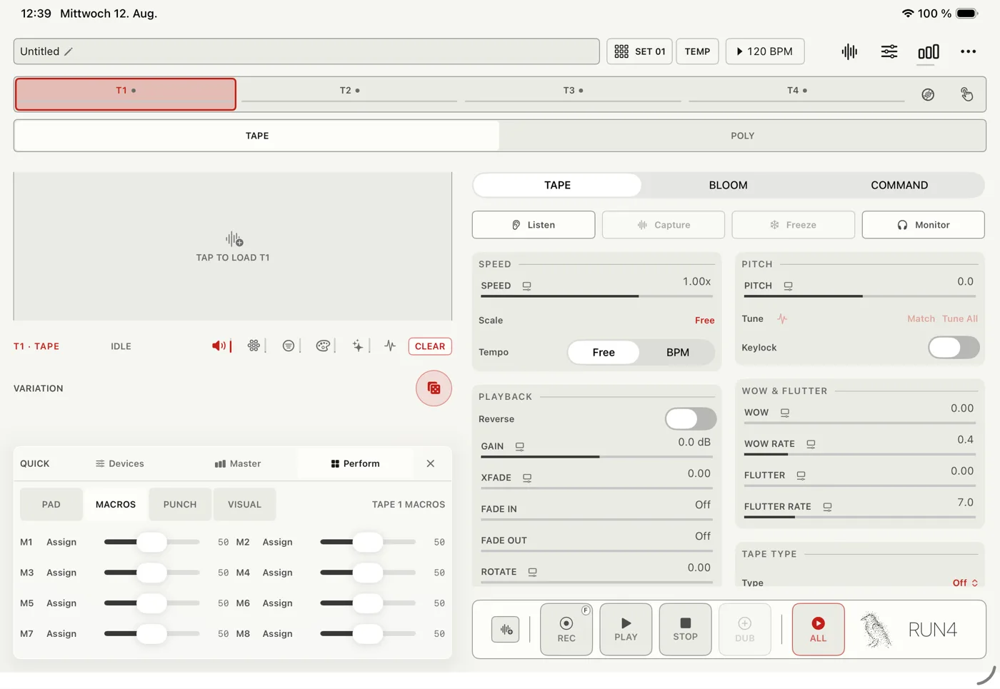
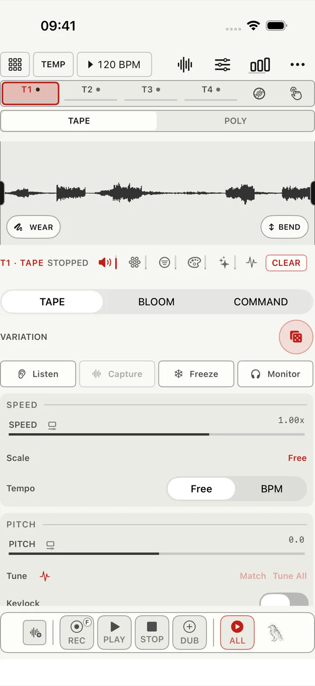
Tape on iPhone and iPad. The header holds the project name, Set/Temp, the tempo and the tools. Below it are the destination bar (T1 to T4, Disc, Perform) and the Tape/Poly switch for the selected track. iPad landscape puts the same controls side by side.
A project holds everything: the four tracks, their audio, their devices, the mixer and the Sets. Open the ellipsis in the top row, then Projects, to save, Save As New, start an empty project, load another one, or keep the current setup as a template. Save is always available, whether Auto Save is on or off.
Auto Save is on by default (Settings › General). It keeps your project up to date as you work, including when you leave RUN4, so normally nothing is lost.
With Auto Save off, RUN4 only saves when you choose Save or Save As New. Opening another project does not save the one you are leaving. Starting a new project or loading a template warns you before anything is thrown away.
Projects › iCloud › Move to iCloud turns the current project into a synced one. Its audio is collected once, and from then on Save and Auto Save keep it current on your iPhone and iPad. Open Cloud brings the latest version into RUN4, where both the app and the AUv3 can reach it. The iCloud and Transfer sections start folded, so the list stays short on a phone.
Make Local stops syncing that project and keeps both the local copy and its last cloud copy. If two devices changed the same version, RUN4 does not guess — it stops and asks you to open the latest cloud project.
Transfer › Export Project packs the project and all its audio into one .run4project file and opens the share sheet: AirDrop it straight to your other iPhone or iPad, or save it to Files or iCloud Drive and choose Import Project there to carry on.
Hosted AUv3 plug-ins need one note. A project remembers which plug-ins you used and their saved state, but it cannot carry the plug-ins themselves. Install the same AUv3 on the other device and open the project in the RUN4 app to bring it back. Whether a plug-in's own presets and samples come along depends on the plug-in.
RUN4 comes with three demo projects. Open Projects and look under Demo Projects: Night Lights has a handpan, night textures and echoes across three tapes; Rökkur an organ drone and soft pads across four tapes; Morgunn warm tape textures from two slow loops.
Open loads a fresh copy of the demo to play with. It is not saved until you choose Save — Auto Save leaves a demo alone — so trying the demos never fills your project list. Once saved, it is a normal project of your own; a second saved copy gets a number, like Night Lights 2.
Opening something else while an unsaved demo is open asks first, and the demo's audio is removed again if you don't keep it. The demo itself never changes, so you can always open it again and start fresh.
When you open a demo, the project you are leaving is saved first if Auto Save is on. With Auto Save off, RUN4 asks before replacing it, just like From Template.
Undo and Redo are in the ellipsis menu. There is just one Undo: it always takes back the most recent thing you did, and its name tells you what that is.
RUN4 keeps a snapshot before anything that could cost you work: recording over a tape that already holds a take, clearing or resetting a tape, and replacing a loaded sample. Undo brings the sample, the loop points, Pitch and the rest of that tape back exactly as they were. This kind of undo restores the whole project, so it also takes back anything you did after that point. Twelve of these are kept; opening or starting another project clears them.
Control moves can be undone too — changes to Grain, Tone, Color, Air, Tape's playback controls and Poly. When the last thing you did was a control move, the row reads Undo Edit. One drag counts as one step, and a drag that ends where it started isn't recorded. Up to forty-eight edits are kept for the session. Undoing an edit only moves the control back — nothing reloads and a playing tape keeps playing — so it is safe in the middle of a set.
Redo moves forward again, so stepping back and forth never loses anything.
DUB is the exception. An overdub is written straight into the take, so what was there before is gone. If you want to keep the original, record onto another track.
Some smaller undos live where they happen. The dice in Tape, Bloom and Command each have a one-step Undo, and the Tune row has its own revert buttons.
Long-press is the second layer of almost every control in RUN4. It never changes the value; it opens what the control can be connected to. Learn the few below and you know most of it.
Start with the BPM display. Long-press it anywhere in RUN4 to open Timing & Sync: MIDI Clock In and Out, Ableton Link, Sync Quantize, Rec Grid and the Metronome. Rec Grid snaps Record, Overdub and Play All to RUN4's tempo grid when no external clock is running, and the Metronome clicks along with it.
When one of the track's modulators (M1 to M4, on the Mod page) moves a parameter, a small M chip in the track colour appears next to its name. Tap it to jump to that modulator.
Long-press targets
BPM display, anywhere in RUN4
Timing & Sync: MIDI Clock In and Out, Ableton Link, Sync Quantize, Rec Grid, Metronome
Any routable parameter or selector
Add or remove a modulation source, or map it to a track Macro or the Rune Pad
Poly pattern step
That step's editor: source, Kit slot and playback, Length, Velocity, Gate, Pitch, Probability, Repeat, Micro, and Mute
Quick device icon
That device's full panel
Part 02
Tape
The four tape tracks: recording, playing them with your hands, tuning them to each other, and the two sequencers on top.
Tape records audio into a loop and plays it back. You can overdub into the loop, and you can resample RUN4's own mix without any cables or microphones. Open it from a T1 to T4 chip, then Tape in the row below. It is the quickest way to get sound into RUN4 and start bending it.
REC records into the selected tape. PLAY starts it, following the Tape Start setting — Restart, Resume or Align. STOP stops the selected tape; double-tap it to stop everything at once, reverb and delay tails included. DUB overdubs onto what is already there. ALL starts and stops every track together. Monitor lets you hear the live input while you record; it starts off.
Long-press a T1 to T4 chip to solo it. The other tracks fade out but keep running in time, and come back where they are when you release the last solo. You can solo several tracks at once.
Listen keeps a short recording of RUN4's mix running in the background, and Capture copies it into the tape. Together they let you resample whatever RUN4 is playing, without anything leaving the app.
Freeze holds the tape where it is and turns a loop into a sustained texture.
Clear asks what you want to reset: Only Recording, Tape Settings, Recording + Tape Settings, or Recording + Settings + Devices, which also resets Grain, Tone, Color and Air on that track. Options that remove the recording only appear when the tape holds one. All of them can be undone.
The dice in Tape, Bloom and Command roll a variation for the section you are looking at. An Undo appears after a roll, one step per section. A new roll, or a change by hand, starts fresh.
Two touch chips sit on a loaded waveform. Usually the left one paints behaviour onto the recording and the right one plays a gesture while your finger is down. The next section explains both.
Tapping an empty waveform opens Samples with that tape already chosen as the destination — the fastest way from nothing to a sound. Once the tape holds a take, tapping goes back to panning, zooming and moving the loop handles.
Quiet recordings are drawn larger than they really are, so a faint take is still readable. Louder material is drawn at its true size, and Gain still changes the picture.
Every loaded Tape waveform has two chips. The left one is normally a Paint tool and the right one a Gesture. Paint writes behaviour onto spots in the recording and it stays there. A Gesture only lasts while your finger is down. Your choice of the two is saved with the tape.
Tap the Paint chip to start painting, then draw across the waveform. Left to right is the position on the tape. Drawing higher applies more; drawing near the bottom cleans that spot again. Tap the chip again to stop. Long-press it to choose Wear, Melt or Bloom Paint, clear the painting, switch to two gestures, or load a Touch Preset.
Wear adds drag, wobble and small dropouts exactly where you drew. It works even with Wear Rate at zero, and when wear is building up over time, the painted spots age fastest. Melt darkens, ages and slows the painted parts as they play. Bloom Paint brings in the six Bloom heads only at the painted spots, without touching the main Bloom switch or your head settings.
Drag a Gesture chip to play it; the label shows the amount while you hold. Long-press it without moving to pick another gesture — this works while the tape plays.
Bend shifts the tape speed by up to three semitones and glides back to the set Speed when you let go. Bigger bends take a little longer to return, and Elasticity adds lag, overshoot and settling on the way back. Brake slows the motor down and adds some Melt. Catch repeats the bit under your finger, two to eight times.
Fold and Squeeze work vertically, so they still work at the edge of the waveform. Drag up for reverse Fold and down for forward Fold; the distance picks ×2, ×4, ×8 or ×16. Squeeze narrows the playback window around the spot where you started, in either direction. Melt raises the tape's Melt while you hold.
Bloom Hold spreads the six Bloom heads for as long as you hold, and moving sideways changes how they move. Bloom Throw gives them a push instead, so they drift and fade after you let go. Rub is the simplest: drag up or down from 0 to 100% to add drag, wear, snags and brief dropouts, held until you release.
Choose Use Two Gestures on the left chip to turn it into a second gesture. Long-press each chip to pick its gesture, then use two fingers to play both — Bend on the left and Bloom Throw on the right, for example. Choose Restore Paint on Left to switch back. Gestures that would fight each other are left out of the list.
Your painting stays on the tape while two gestures are showing, so switching loses nothing. Gestures never change the Tape controls you set. Touch Presets are just shortcuts to a pair: Tape Hands is Wear Paint and Bend, Bloom Hands is Bloom Paint and Bloom Hold, and Broken Tape is Wear Paint and Catch.
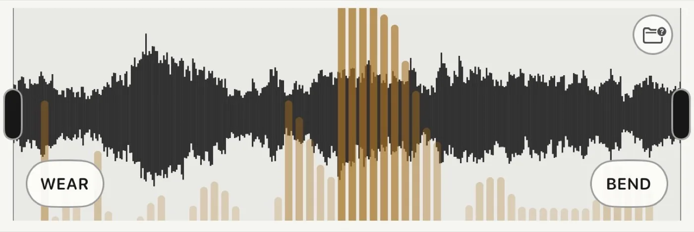
Tape Touch in use: Wear is painted onto the waveform while Bend waits as the gesture.
A tap on Tape REC records with your current recording setup. The waveform-plus button inside the transport box opens that setup, and it stays open while you adjust it.
Record captures and stops at the end. Record & Play captures and starts the new loop right away — ideal for building loops live.
Length is Free, or a fixed 1, 2, 4 or 8 bars. Fixed lengths follow the RUN4 tempo in 4/4, so two bars at 120 BPM is four seconds. If Level-Triggered Record is on (Settings › Recording, with its Trigger Threshold), REC shows QUEUED until the first sound is loud enough, and a fixed length counts its bars from that moment. Print is the exception, because it starts the pattern itself. While recording, the waveform shows the elapsed time for a Free take, or the bar count and time left for a fixed one.
Count-in is Off or 1 Bar. With 1 Bar, READY counts 4, 3, 2, 1 before recording starts. The count-in clicks even when the Metronome is off, at the Metronome's volume. Stop, or a second REC, cancels it.
The Metronome and its volume fader live in the same panel. It clicks quarter notes and accents beat 1. In the app it never ends up in a Tape recording or an export. Inside the AUv3 it has to play through RUN4's output to be heard, so a host recording that output will pick it up — RUN4's own Tape recordings stay clean either way.
Rec Grid and Length are easy to mix up. Rec Grid decides when a recording starts; Length decides when a fixed recording ends.
The small round button next to the tape waveform opens Edit Sample. It holds two edits that change the audio file itself. Both are unavailable while the track is recording or overdubbing.
Normalize raises the loudest peak to just below full scale (-1 dBFS). Both channels get the same gain, so a stereo recording keeps its balance. If the file is already there, or completely silent, nothing changes and RUN4 tells you. The message shows how much it changed, for example Normalized +6.2 dB.
Make Mono turns a stereo file into one channel and asks how: Left, Mix L + R, or Right. Pick Left or Right when only one side holds the sound you want, or when one side is silent. Mix L + R blends both. A mono file is left alone.
Neither edit overwrites anything. The result is saved as a new sample and the tape switches to it, so the original stays in your library. Both can be undone like any other edit, for example Normalize T1.
Split Stems pulls a sample apart into four recordings — vocals, drums, bass and everything else — so you can use a drum break without its vocal, or keep a bass line and drop the rest. Open it from Edit Sample next to the tape waveform, or long-press any sample in the Sample Browser to split it without loading it first.
Everything happens on your device. Nothing is uploaded, no account is needed, and it works offline. It uses Deezer's Spleeter model; its licence and credits are on the Licenses page.
A progress bar shows how far along it is, and Cancel stops it without leaving anything behind. A four-minute sample takes a few seconds on a recent iPhone; older devices take longer, and the app is busy while it runs.
The source can be up to four minutes, like any Tape sample. For a longer file, trim it to a section first — the Sample Browser offers this when you import it.
When it finishes, the four stems are listed. You can listen to each one, and Load asks where it should go: any of RUN4's four Tapes, or any of TÓLF's twelve Sampler tracks if you have TÓLF. The selected tape is ticked, and RUN4 asks before replacing anything. The stems are also saved to your library, so you can close the sheet at any time.
Once loaded, a stem is an ordinary sample. It plays, loops, tunes and wears like any recording of your own.
These live on the Tape tab. They cover three things: how the tape plays, how it loops, and how worn it sounds.
Listen/Capture keeps the last eight seconds of RUN4's mix ready to grab, so resampling is one tap away.
Speed runs from a sixteenth of normal up to four times, and changes timing and pitch together like a real tape — unless Keylock is on. Pitch transposes on its own, up to two octaves either way. Reverse plays backwards.
Tempo switches Speed between free and BPM-aware. In BPM mode, Source BPM is the tempo the recording was made at, and Tape BPM is the tempo it plays at, with the speed change shown next to it (for example 120 (2.00x)).
Scale decides whether pitch and speed snap to anything: Free, Chromatic, or a musical scale. With a scale chosen, Root sets the key.
In BPM mode, Start Grid and Length Grid snap the loop start and length to musical values, from eight bars down to a sixteenth, or Free.
Keylock keeps the pitch steady while Speed changes. Glide smooths changes instead of jumping.
Gain sets the tape's level. Loop edges are taken care of for you: a trimmed edge settles on a nearby silent point, and a short 3 ms blend stops clicks without changing the length. XFade stretches that blend up to 500 ms, which suits pads and long sustained loops. Rotate shifts where playback starts inside the loop.
Shadow adds a hidden second playhead that follows the loop with slow, gentle drifts in position, speed and pan. It is not drawn on the waveform. The drift is stored with the project, so it always sounds the same. Its level is balanced, so the control is about depth, not volume. Bloom and Freeze take priority over it.
Fade In and Fade Out shape each pass of the loop. Both start Off, so nothing you load is reshaped until you ask. Each can reach half the loop; both at maximum make one long swell. Using only one still keeps the loop click-free.
The waveform shows Fade In and Fade Out at the length you set.
SOS sets how much of the old material survives an overdub: high keeps it for many passes, low replaces it quickly.
Wow and Flutter are the two kinds of tape wobble, each with its own Rate. Wow is slow drift, Flutter is fast.
Tape Type is Off by default, so an existing tape never changes behind your back. Reel, Sixties, 4-Track, Cassette, Video and Dictaphone each add the sound of that medium: its frequency range, its dynamics, a little noise where it belongs, and its own gentle motion. Reel adds just a touch of warmth. Sixties, 4-Track and Dictaphone are the most coloured; Cassette and Video stay clean.
Tape Type never changes your Wow, Flutter, Failure, Noise or Splice settings. Choose the medium first, then add as much wobble, hiss or damage as you like.
Tape Character is wear that is there from the start. Age takes off brightness right away. Drift adds slow, musical wobble. Elasticity changes how the motor settles after a speed change. Dust adds tiny dropouts. Melt darkens, loosens and slows the tape.
Wear Rate is wear that builds up over time. It starts at zero, so nothing ages unless you want it to. Raise it and a looping tape ages a little with every pass. Stopping, or setting it back to zero, keeps the wear it has reached. Accumulated shows how far it has gone and is saved with the tape; Restore removes it. Wear Paint only makes the painted spots age faster. Your original audio is never changed — export a stem to keep the worn sound.
Degrade is the damage section. Failure adds wear, pitch snags, crinkles and dropouts. Noise adds hiss, and Noise Color changes its character. Splice sets how the loop join sounds, from a clean cut at 0 to a rough, hand-made splice at 1.
Crush is digital: one knob that lowers bit depth and sample rate together, gentle at the bottom and heavily lo-fi at the top. At 0 it does nothing.
Stutter is the digital cousin of Failure. Instead of a soft dip, it briefly cuts and freezes the playhead for a glitchy repeat.
Codec sounds like a low-quality MP3 rather than a harsh crunch: smeared, washy highs and a duller top end. That is what sets it apart from Crush. It becomes clearly audible around halfway, adds a little pumping and width as it rises, and gets extra gritty near the top. At 0 it does nothing.
The dice next to Tape Variation rolls a new tape character: Speed, Pitch, movement, Wow and Flutter change, while your sound, gain, loop, routing and project tempo stay put. The Undo next to it takes you back to exactly what you had.
Four tapes recorded at different times rarely agree on pitch. The Tune row, in the Tuning card below Pitch, brings them into a musical relationship. Its buttons wake up once the track has a take. It listens to the current loop and reports the key you actually hear, including any Pitch or speed change.
Tap the analyse button to detect the tape's key. Treat it as a guide: sparse, noisy or atonal recordings come back as No key rather than a confident wrong answer.
Match compares the selected tape with the other recorded ones and offers ways to match them. Picking one changes the tape's Pitch and sets its pitch snapping to Chromatic. The audio itself is never changed. The curved-arrow button undoes the last Match.
Tap Match again to reopen the same list, so you can try Best, Fifth, Darker and Brighter against each other. The active one is ticked, and choosing another replaces it. Use the analyse button when you want a fresh analysis, for example after changing the loop.
Tune All › To T1–T4 uses the tape you pick as the reference and matches every other recorded tape to it. The circular-arrow button undoes the whole thing in one step, as long as those tracks haven't changed since.
Bloom turns one playhead into a cloud of six. It lives on the Bloom tab. Use it for chorused loops, smeared harmonies, clouds, or a swarm that moves by itself.
Spread moves the heads apart, Motion sets them moving, and Stereo spreads them across the stereo field. Together they shape the cloud.
Warble and Warble Rate add pitch and timing wobble to the cloud. Degrade adds tape wear to the Bloom sound only.
Each head also has its own Direction, Level, Pitch, Speed and Pan, plus Start, End and Repeat (1 to 8) for the part of the loop it plays. Direction is Stop, Fwd or Rev, and Pitch is in semitones. Giving heads different speeds turns six copies into six related voices. Stop All halts every head at once.
Reset Global resets Bloom's shared controls. Reset Heads resets all six heads.
The dice next to Bloom, All Heads switches Bloom on and builds one balanced cloud — a good starting point rather than six random extremes. The Undo next to it brings back your previous Bloom, heads included.
Command is a sixteen-step sequencer for actions instead of notes. On the Command tab, a step can make the tape jump, reverse, retrigger, squeeze its loop, stutter, gate, hold, nudge, spread Bloom, or play a Memory.
BPM here is the project tempo. Changing it changes the same tempo that Link, MIDI clock and everything else follows.
Pattern picks A, B, C or D, and Chain plays them in an order you set — up to sixteen links, each one of the four patterns. Seed Lock keeps the random and probability choices the same every time, so a pattern you like stays that way. New Seed rolls a different version.
Every step has a command, a value if the command needs one, and a Probability. Some commands also have a Scope: Step affects just that moment, Global changes the tape until something else does. At 1 it always plays. Lower it and the step only plays sometimes — the easiest way to stop sixteen steps sounding like sixteen steps.
The value depends on the command: Jump takes a Position, Rate a rate, Spread sets Bloom's spread, Squeeze the loop size, Stutter a number of Repeats, and Nudge an Offset.
A Memory step plays a saved Memory and can transpose it, up to two octaves either way. Level, Fade In and Fade Out shape each snippet. Memories used by a Command step are never cleared out automatically, so a pattern can't lose its sounds. Clear Pattern empties the current pattern.
The dice next to Command, Pattern fills the pattern with sparse, playable tape moves. It never adds Memory steps, so it won't surprise you with stored audio. The Undo next to it brings your previous pattern back.
Part 03
Poly and Disc
Playing a track as an instrument — from the keyboard, a sample, a synth or a plug-in — and the shared deck for long files.
Poly plays the selected track as an instrument. Open it from a T1 to T4 chip, then Poly in the row below. It can play a loaded sample, one of RUN4's two synths, or, in the app, an AUv3 instrument.
Choose Sample, Classic, FM or AUv3 at the top of Poly. Classic and FM are RUN4's own synths. AUv3 is missing from the plug-in version, because iOS does not let a plug-in host other plug-ins.
The on-screen keyboard and incoming MIDI play exactly the same way. The octave buttons shift the keyboard, and the current octave is written on its C key.
The keyboard and the step sequencer each have a show/hide button in the Poly transport box. Hiding one gives its space to the Sample, Synth or AUv3 editor — handy on a small screen.
OCT -, OCT +, CHORDS and SCALE sit top left on the keys, STEP top right. Tap CHORDS or SCALE to open its menu. In SCALE you can pick a key and scale yourself and switch it on with Enable Scale, or let Match find one for you.
From T1 to T4 picks a tape to follow, and Match detects its key and applies it to the keyboard: SCALE gets a matching scale, CHORDS gets the chords that belong to that key. The tape itself is not changed. Both menus can lock playing to those notes — the keyboard layout stays the same, unused keys dim, and MIDI and computer-keyboard notes are filtered too.
Poly's step strip — sixteen steps per bank, up to sixty-four per pattern — is a quick way to enter notes or Kit hits and print an idea onto Tape. It is not a song arranger for the four tape tracks. The next section explains what it does.
Long-press the main Poly REC to choose Free or a fixed number of bars, Count-in Off or 1 Bar, and the Metronome settings. Tap REC to record the Poly or AUv3 sound onto the paired tape. The small record circle in the sequencer does the same thing with the same settings. Poly shows READY during the count-in, then a countdown for a fixed length or the elapsed time for a Free one.
The dice randomises performance values. Kit Presets save and load the eight slot choices only, so one Kit can play different patterns, or one pattern can play through another Kit.
Recording a fixed number of bars makes tempo-synced AUv3 grooveboxes easy: RUN4 runs their transport and stops the recording exactly on the bar.
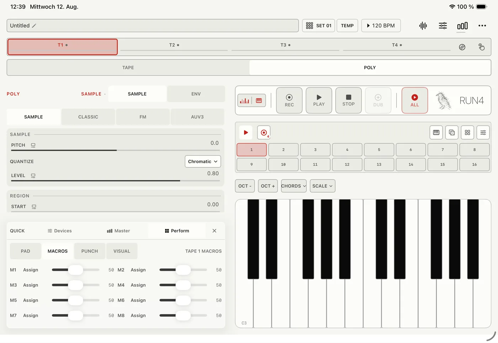
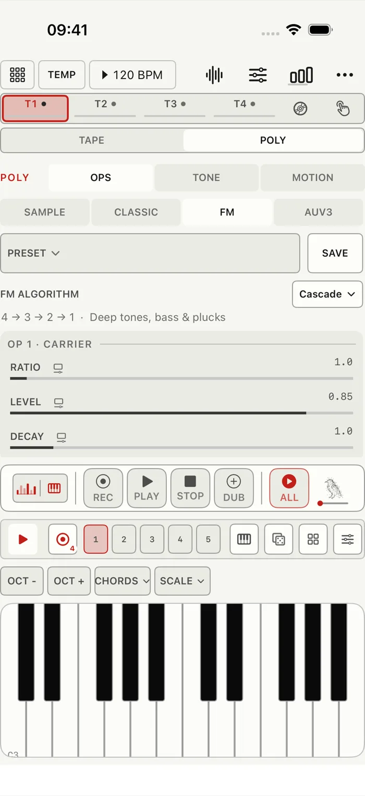
Poly on iPhone and iPad: keyboard, pattern, and sample or synth controls for the selected track. On iPad the keyboard and pattern sit beside the controls instead of below them.
The step strip is a small note and Kit sequencer for the selected track. It shows sixteen steps at a time, and a pattern can have up to sixty-four. It plays the current sample, synth, AUv3 instrument, or one of the eight Kit slots.
Tap or long-press a step to select it and open the Step editor. Its Source, Event and Behavior cards keep the Kit slot, Length, Velocity, Gate, Pitch, Probability, Repeat, Micro timing and Mute neatly apart. A step plays either notes or one Kit slot, never both. Muting is done in the editor, not by tapping the step.
You can read the grid at a glance. Each step's Velocity shows as a fill — in the track colour when it plays, grey when it is empty or muted. A thin line along the bottom appears only when Probability is below 100%.
On iPad's larger grid, drag up or down on a step to set its Velocity, and keep your finger down while moving sideways to draw a ramp across the pattern. Empty steps take a value too, so you can shape a curve before adding notes; dragging never creates a note. On iPhone, sideways dragging scrolls the strip, so set Velocity in the Step editor instead.
Length lets a note or hit carry on over the following steps without blocking them. A line along the bottom of the grid shows how far it reaches. Gate sets how much of that Length you actually hear, so a three-step event at 80% sounds for 2.4 steps. Repeat splits the whole Length into rapid repeats.
Resolution is how long one step lasts, from 4 Bars down to 1/64. Pattern length and Resolution multiply: sixteen steps at 1 Bar make a sixteen-bar loop.
Each Kit slot, K1 to K8, has its own playback mode. Gate follows the step's Length and Gate. One-shot always plays the whole sample, even after its step ends, and other hits can overlap it. Older projects open in Gate mode, so nothing you made changes.
Pattern Stop also silences every Kit sample the pattern started, One-shots included. RUN4's Stop All silences everything.
The Pattern workspace opens in Poly's upper area instead of covering the screen, so the sequencer and keyboard stay playable below. It has three pages. Step edits the selected step. Pattern holds Length, the Sound card and Whole Pattern. Kit loads K1 to K8 and manages Kit presets; on the Step page, Kit next to Playback jumps straight there.
On the Pattern page, the Sound card is where you start: choose Notes, All Sounds, or K1 to K8. For Notes, play them in with STEP on the keys. With a Kit slot, all eight slots plus Load Sample are right there, so an empty project can load a sound and build its first Euclidean rhythm without leaving the page.
Sound decides what Euclid, Rotate and Clear in the same card change: All Sounds, Notes, or one Kit slot. This is how you move, fill or clear one sound without touching the others. Whole Pattern, below it, always works on everything.
Reverse flips the pattern end to end. ×2 doubles the pattern length and copies it into the new second half — the quickest way from eight steps to sixteen with room for a variation. ÷2 halves the pattern and keeps the first half; the steps beyond it are kept, just like when you shorten Length by hand.
Rotate Left and Rotate Right shift steps along with all their settings. With Notes or a Kit slot as the Sound, only that sound moves. A step never overwrites a step of a different sound, so nothing is lost; if every destination is taken, nothing moves.
Euclid spreads one sound evenly using Hits and Rotate. With a Kit slot as the Sound it works on an empty pattern too, so you can place five hits of K4 from scratch. An empty Kit slot is refused rather than adding silent hits. Apply uses the values shown; Randomize picks new values, applies them and updates the display. Other sounds are never overwritten, and hits that fall off the new rhythm are only muted, so you can get them back.
Swing delays every off-beat step, from Straight through 54%, 58% and 62% to 66%, the classic triplet feel. It is written into each step's Micro timing, so the pattern stays editable and new notes land in the groove. Moving one hit by hand shows up in the Swing value too.
Humanize nudges Velocity by up to 12% and Micro timing by up to 6% around what you wrote. Unlike Vary and the dice, it keeps your part and just loosens it. Gate, Probability and rests are left alone, and a short Applied message confirms it worked.
Vary does what the strip's dice does, one tap each: Velocity, Gate, Chance or All get new random values on every step that plays.
Clear empties every step that matches the Sound — the whole pattern or just one Kit slot.
The arrow at the top of the Pattern workspace steps back through your pattern edits, up to fifty: tools, Step Entry and changes in the Step editor alike. A slider drag counts as one edit. Undo brings back the steps, Length and Resolution; the Kit sounds and the selected step stay as they are. The same Undo is in the pattern dice menu.
Kit slots have no Loop or Retrigger mode yet. Use Gate for a set length, or One-shot for the whole sample.
STEP, top right on the keyboard, turns Step Entry on. Notes you play — on screen, over MIDI or from a computer keyboard — go into the selected step, and keys held together land as one chord. ‹ and › pick the step, the number between them shows which one, and AUTO moves to the next step after each entry. While the pattern plays, entries go to the step under the playhead instead.
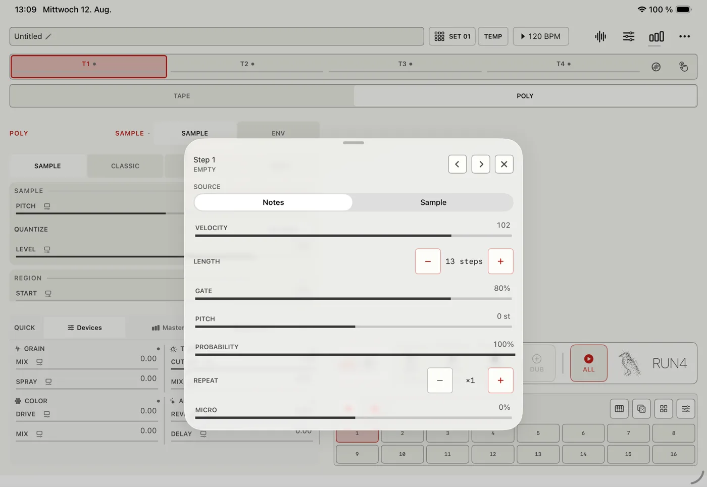
A long event: you can see how long it lasts, and the steps it covers still play on their own.
With Sample chosen at the top of Poly, the loaded sample is drawn above the controls. The part set by Start and Length is shaded, so you can see what you are playing. While a note sounds, a thin line shows where it is reading.
With nothing loaded, the field says Load Sample. Tap it to open the Sample Browser.
Start sets where the sample begins, and Length how much of it plays from there. Loop sets the loop point inside that part, and XFade smooths the loop join, up to 500 ms. Mode decides how the loop plays: Forward jumps from the end back to the loop point; Flip plays back and forth.
Pitch shifts the sample in semitones. Quantize snaps it to Chromatic semitones or leaves it Free for fine detuning. Level sets the volume of each note.
Attack, Decay, Sustain and Curve shape the volume of each note. For samples, Decay also sets the release. Velocity sets how much playing harder makes it louder.
In the Filter card, Amount adds a filter sweep to each note, and Shape changes how closely that sweep follows the volume envelope. The Motion section adds an LFO to the sample voice.
Poly has two synths. Classic is a subtractive synth and FM has four operators. Choose either at the top of Poly; AUv3 sits next to them for plug-in instruments. Each synth has its own presets, and you can save your own.
The synth choice stays pinned at the top next to POLY, so you always see what is playing while the controls scroll below. The sections above the cards switch between them: Sound, Filter and Motion for Classic; Ops, Tone and Motion for FM; Source, Env and Motion for the sample player.
Each synth draws one note above its controls: the volume envelope as the outline, filled with the actual sound. Classic shows its waveform; FM shows its operators, so turning a Ratio or Level visibly changes the shape. A long Attack visibly takes up more of the picture.
In Classic, Wave picks Sine, Tri, Saw or Sqr. In FM, Cascade, Merge, Dual and Split set how the operators connect, and the Character card adds Feedback, Noise and Punch.
The filter has Cutoff and Resonance. Cutoff moves in musical steps across the range, and Resonance adds emphasis without whistling on its own.
The volume envelope has Attack, Decay, Sustain and Release. The Filter Envelope card has its own Amount, Attack, Decay, Sustain and Release.
The LFO has Shape (Sine, Tri or Sqr), Rate, → Pitch and → Cutoff. → Pitch can move the pitch up to about an octave; → Cutoff sweeps the filter over several octaves.
In AUv3 mode, Choose Instrument (or the name of the loaded one) opens the list of instruments installed on your device; Refresh looks for new ones, and the search field filters by name or maker. Edit Plugin opens the plug-in's screen if it has one, and Remove AUv3 unloads it.
A plug-in instrument follows RUN4's tempo, bar position, time signature and play/stop, so grooveboxes and sequencers start, stop and record in time with everything else.
Editor Layout sets how the plug-in's screen opens: Docked Editor inside Poly, Compact Editor (iPad only), or Full Editor. Rotating the device keeps your Poly page and your layout choice.
Disc is one playback deck for the whole set, opened from the Disc chip in the destination bar. It streams a long file straight from storage instead of loading it, so hour-long recordings are no problem.
Because Disc belongs to no track, you choose where it plays. T1 to T4 at the top still pick the track you are editing, while Route, in the Output card, picks where Disc is heard: Follow selected track moves it with your selection, and Pin to T1–T4 keeps it on one. The OUT T1 to OUT T4 badge shows where it plays, in that track's colour. Tap the badge to move Disc to the next track. Long-press it to jump to that track and adjust the Grain, Tone, Color, Air, sends and mixer channel Disc plays through.
Link opens and loads a file, and its name confirms what is loaded. Eject only disconnects RUN4 from the file — it never deletes it from Files, iCloud or a drive. Drag the position bar to move through the file.
Level sets the Disc volume. In the Region card, In and Out set the part of the file that plays, and Loop repeats it.
Speed (a sixteenth of normal up to four times) and Pitch (two octaves either way) change how the file plays. Four cue points, set with Set IN and Set OUT, let you jump between favourite spots. Tune can match the Disc to a tape's key, like Match on a tape.
The record on screen is a control: drag it to scrub. One full turn is about one turn of a record at 33 1/3 rpm, so a slow hand pitches the sound down and a record-speed turn plays close to normal. On wide screens the record grows bigger, which gives you finer control.
Disc has its own PLAY and STOP, and ALL works here too.
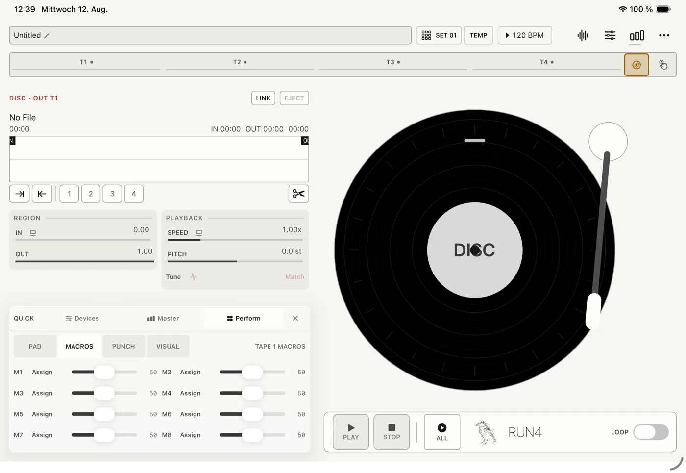
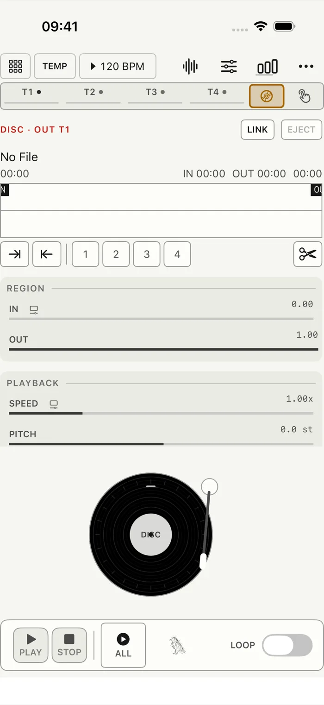
Disc on iPhone and iPad: one deck for long files, outside the four tracks.
Part 04
Devices
The four devices every track runs through, in order, and the Mod page that moves them.
Grain cuts the sound into tiny pieces and plays them back as clouds, scans and delay-like textures. It is the first device in the chain, on the Grain tab in Devices. Mix starts at 0, so you won't hear it until you turn it up.
The first group shapes the grains. Rate is how many grains play, and Rate Sync switches it from free timing to Straight, Dotted or Triplet notes (the control is then called Division). Size is how long each grain lasts, and Contour makes its edges sharper or softer. Warp bends where the grains read from. Pitch transposes them, Scale snaps that to Free, Chromatic, Major, Minor, Dorian, Pentatonic or Fifths, and Detune spreads their pitches. Mix blends the grains with the original sound.
Motion keeps a cloud from standing still. Spray scatters grains in time and across the stereo field. Pattern moves from even pulses towards a loose cloud. Scan reaches back into recent audio and Stretch slows that down. Scan Mode picks Stretch, Position, Delay Sync or Delay Free; Spray Mode picks stereo Warp or Warp Mono.
Random adds the small irregularities that make a cloud sound alive. Rate varies the timing, Size the grain lengths, Amp the grain volume, and Reverse how often a grain plays backwards. Mode picks how pitch is randomised: Detune spreads the grains slightly, Random gives each grain its own note, Random Mono gives all grains one note at a time and steps on like a small arpeggio. With a Scale set, the notes stay in key.
The Engine card sets the device's character. Type picks Live Cloud or Scan Cloud. Feedback chooses between input SOS and Grain Output, and SOS sets how much older audio stays in the buffer. Run While Idle keeps the Scan engine moving when no sound is coming in, so a texture doesn't die when the track stops. Save Buffer keeps what is in the buffer as reusable material. Time and Beats set the scan delay, free or in time.
Grain Freeze is the last row. Turn it on and the device switches to Scan Cloud and stops recording new audio; what is in the buffer keeps playing and can still be scanned, pitched, sprayed and modulated. In Position mode the sound holds still on the frozen audio, and Scan moves you through it. The frozen buffer is saved with the project, so it is still there when you open it again. Turn Freeze off to carry on recording.
The factory presets include clouds, rhythmic textures, and four made for specific sounds: Beat Reinforce, Vocal Halo, Chord Drift and Bass Shadow. Choosing a preset resets Grain first, so you always start clean. You can save your own next to them.
Tone is the filter and resonator, second in the chain. It starts with the filter fully open and Mix at 0, so it does nothing until you turn it up.
Type picks Lowpass, Highpass, Bandpass, Formant or Resonator. The first four are filters: Cutoff sets the frequency (or the vowel, for Formant), Resonance adds emphasis, and Mix blends in the filtered sound.
Resonator is a different instrument on the same tab. Voices sets one to sixteen ringing tones, Root shifts them all, and Scale tunes them to musical notes. Structure moves them from harmonic towards stretched or metallic. Detune spreads them, Resonance sets their strength, Decay how long they ring, and Brightness tilts the sound. Noise keeps the resonator singing even when the input is quiet. Mix blends the result.
Color adds drive, distortion and grit. It is third in the chain and, like the others, silent with Mix at 0.
Type picks Saturate, Fold, Bitcrush or Ringmod. Saturate is warm saturation; Fold folds the wave over for a richer, harsher sound. Both use Drive, Tone and Mix. Bitcrush uses Bits and Rate — lower means cruder — with Tone to darken or brighten the result. Ringmod uses Drive, Frequency, Tone and Mix; Frequency goes from slow tremolo up to metallic tones.
Dynamics works with every type and keeps a heavily driven track usable. Crossover sets the split between lows and highs, Focus drives one side harder while protecting the other, Tilt reshapes the tone, Compress adds compression without changing the level, and Gate quietens low-level noise.
Noise adds a layer of noise after the effect. Amount sets its level, Color makes it darker or brighter, and Decay sets how closely it follows the sound and fades with it.
Air is space: reverb, delay, a freeze, the colour of the echoes, and an overall tone control. It is the last device before the mixer.
On the Reverb page, Type picks Room, Hall, Plate or Space. Mix is the reverb level, Size how big and long it is, and Damping makes it darker. Freeze holds the reverb tail so you can play over it.
On the Delay page, Type picks Digital, Ping-Pong, Tape or Diffusion. Mix is the echo level, Time the timing, and Feedback how many echoes you get.
The Repeats card colours the echoes. Pitch shifts them up or down — Chromatic snaps to semitones, Glide slides smoothly. Tone darkens them, and Saturation roughens them a little more with each repeat.
Tone in the Output card tilts the overall sound: down for darker, up for brighter.
Mod comes after the four devices, but no sound passes through it. It holds four modulators, M1 to M4, for the selected track, and they move the other devices for you.
Each slot can be an LFO, an Envelope, a Random source, a Follow source or a Self-Listening one. The LFO offers Sine, Triangle, Square, Saw, Sample Hold, Draw and Steps. The Envelope starts on Transport or Note. Random produces stepped or smooth changes; with Smooth up, it glides all the way to its next value, however slow the rate. Follow follows the track's Level control, including any modulation on it. Self listens to the energy of the whole mix.
You can connect from either end. Add Target in the Mod device sends a modulator to a parameter, or long-press any parameter and assign a modulator there. One modulator can move several parameters. Depth works both ways, so one modulator can push one parameter up while pulling another down, and several modulators on one parameter add together.
Draw lets you paint a modulator by hand. Pick an M slot, set Source to LFO and Wave to Draw, then drag left to right across Draw Gesture to paint one cycle. The middle line is zero, above is positive, below is negative. Quick strokes are smoothed so the curve stays unbroken.
Undo brings back the previous drawing, Smooth softens sharp corners, and Clear flattens it. The curve can repeat as a Loop or play once as One Shot. One Shot starts on Transport or Note, and Touch Trigger fires it from the panel so you can hear it while setting it up.
Steps is the stepped version of Draw. Choose Steps as the Wave to get a row of fixed values instead of a curve. Steps sets how many, from 2 to 32, shown eight per row. Drag across the cells to set them — one drag can sweep a whole ramp. It is saved with the Set like a Draw curve.
Any number of steps works, not just 4, 8 or 16 — and odd numbers are the fun part. A table of 13 or 15 steps against a 16-step pattern takes several bars to line up again, which keeps things moving.
Rate goes down to about one cycle every ten minutes on both the LFO and Random, for slow drifts across a whole set. Slow rates read as a time, like 75 s or 8.3 min, instead of hertz.
The shape controls work on every wave, Steps included. Rate is speed, Depth is how much, Phase moves the starting point, Skew shifts the timing within a cycle, Fold folds the shape into extra turns, Curve changes its response, and Spread offsets tracks and slots from each other so four tracks don't all breathe together.
Draw curves, modulator settings and connections are all saved with the current Set.
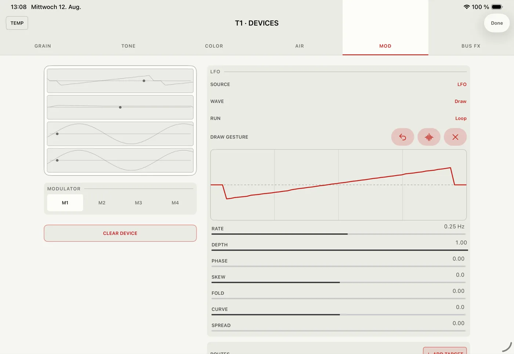
A Draw cycle: the painted curve becomes the LFO movement.
Part 05
Sound library
Getting sounds in, and keeping the moments worth coming back to.
The waveform button in the top row opens Samples. It is organised in sections: Memories, Stems, Chops & Edits, Recordings, Recently Imported, and Linked Folders. Arrange Sections puts them in the order you like, and Search finds sounds, including inside linked folders.
Import brings audio in through the Files picker, as a copy or a link. Link Folder adds a whole folder you can browse, so a large library can stay where it is instead of being copied into RUN4. AudioShare opens the AudioShare app and brings sounds back into RUN4.
Tap an item, or its play icon, to listen, and Stop to end it. The LOAD row sends it somewhere: Tape and Poly each let you pick T1 to T4 (Poly also lists the Kit slots), and Disc links it for streaming. If the destination already holds a sound, RUN4 asks first.
Long-press a sample for more: load it to a Tape, a Poly track or a Kit slot, rename it, split it into stems, or remove it.
You can delete recordings, clear import history, rename samples and unlink folders. Select Samples lets you delete several at once. Files that are missing or unreadable are marked, so you know before you try to load one.
Stems get their own section once you have made some. Each split is one folder named after its source, holding its four parts, so different splits don't get mixed up. Long-press a folder to delete all four; the original sample is not touched.
A Tape holds up to four minutes. If a file is longer, RUN4 offers to trim it. The whole file is drawn, and you pick a section by dragging the handles at each end; drag between them to slide the selection. A dashed line shows where the four-minute limit falls, and pushing one end past it pulls the other along. Only the chosen part is imported, as a new sample named after its range. The original file is never changed, so you can come back for another section later. The same offer appears when a file in a linked folder is too long, and then the section goes straight to where you were loading it.
A Memory is a short recording of the whole mix — a moment you didn't plan to keep. Memories are saved as ordinary sounds and appear in the Samples browser with everything else.
In the Memories section, Listen starts recording the final mix in the background, without touching any Tape. It shares its recorder with Tape Listen, so only one of them can listen at a time: turning this one on turns Tape Listen off.
Remember saves the last eight seconds. Auto saves a Memory every eight seconds while Listen is on, so it catches the things you didn't know you'd want. If nothing has been heard yet, RUN4 tells you instead of saving an empty Memory.
You can listen to a Memory or recall it onto the selected Tape. Long-press it for Recall As… to load a variation: Reversed, Pitch +7, an octave down, or half speed.
The bank holds twelve Memories. When it is full, the oldest unused ones make room — but a Memory used by a Command step is always kept. Command steps can also transpose a Memory as they play it.
Part 06
Performance and visualizer
The live stage: Sets, macros, the Rune Pad, and the visuals behind them.
Perform is the live workspace, the same on iPhone, iPad and Mac. Open it from the Perform chip at the end of the destination bar. Closing it takes you back to the Tape or Poly view you came from.
Its four track lanes never move: T1 to T4, each with its waveform, Play/Stop, Level, DJ Filter and macros M1 and M2. Every tape is always in the same place, which is exactly what you want on stage. In iPhone portrait the stage scrolls instead of shrinking, so the controls stay easy to use.
Play All sits at the left of Perform's action row, next to the visualizer, Rune Pad and settings buttons, and starts or stops every track. Set recall and TEMP are in the header above.
A Set stores the whole playable state: the four tracks, their sounds and devices, the mixer, the macros, the links and the performance setup. Open the Set menu to load a slot, store the current state, or rename the Set.
TEMP is a scratch layer for changes you don't want to keep. Leaving TEMP brings back the stored Set. Plug-ins you loaded stay loaded.
Punch-in FX switches between RUN4's instant global effects and your own Custom slots. Momentary works only while you hold a pad; Hold keeps the effect on until you release it.
The Rune Pad button shows the XY performance pad and its mapping controls. On iPhone and in portrait it appears in place; in wide landscape it floats over the stage so the four lanes stay visible.
Performance Settings — the sliders icon in the same row — has separate pages for Macros and Track Links. A macro has a Value from 0 to 1 and an assign menu listing the track and device parameters.
One macro can move several parameters. After the first target, Add Target opens the same menu again and adds the new parameter as its own chip, with a Depth control and a delete button. Depth sets how far that parameter moves, so one knob can move three things by three different amounts.
Targets can come from any track. Both menus list every other track, and TÓLF if you have it, so one macro can move T1's Pitch, T2's Pitch and TÓLF's Cutoff together, each with its own Depth. A parameter already used by another macro is greyed out and shows who has it (for example 'in use by T2 M3'), so you never take it away by accident.
Choosing Unassigned clears the macro completely, including every added target.
Macro CC learn connects a MIDI CC to a macro. To map a parameter directly, long-press it: Modulation and Macro are at the top, MIDI Learn at the bottom. RUN4 uses that parameter's macro, or a free one, and learns the next CC it receives. Clear MIDI CC in the same menu removes it.
Track Links make tracks react to each other. When the source plays, the target makes room: Duck gets quieter, Split moves aside in the stereo field, Shade takes off the highs. Intensity sets how much.
There are four links, one per tape, and each target is a tape. The source can be any tape and, with TÓLF, any of its twelve tracks or any mix group you have made — so a duck can follow the whole drum group, not just one drum. A muted group triggers nothing, and a link to a deleted group simply stops.
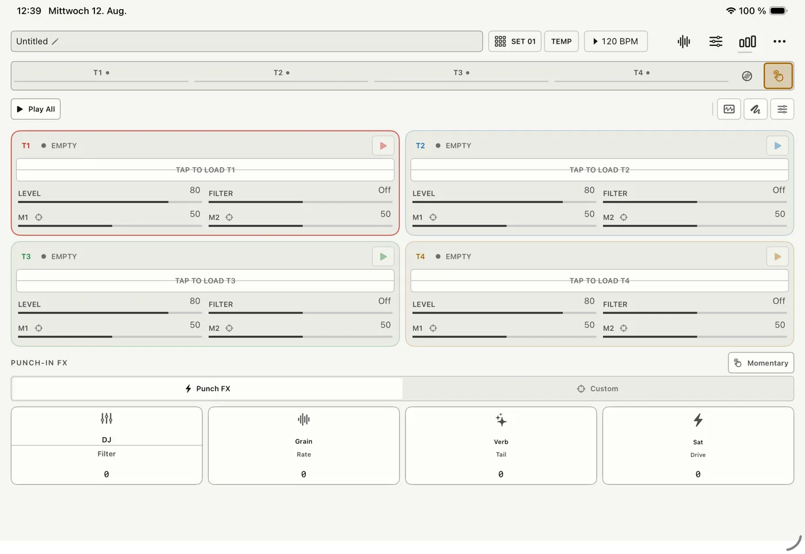
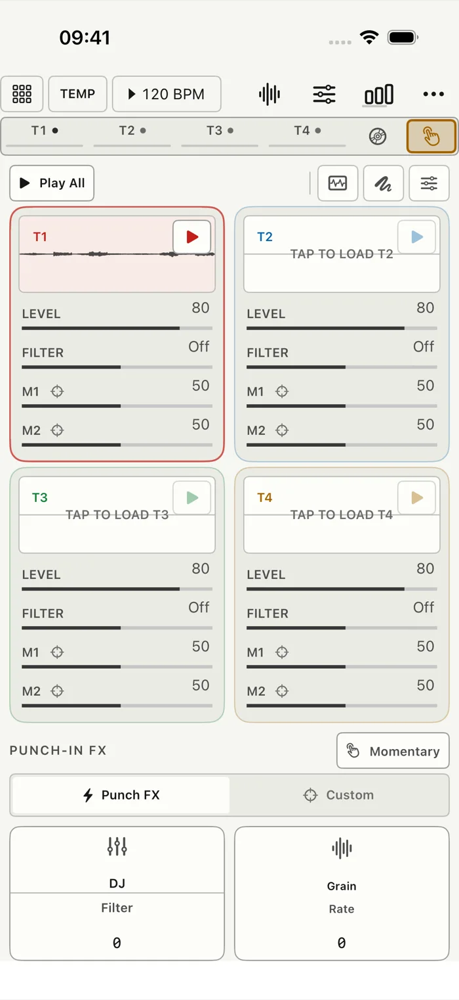
Perform on iPhone and iPad: four track panels with level, filter and macros, above the Punch-in FX row.
The visualizer turns the four tapes and the master output into stage graphics. It only watches — it never changes the transport, the routing or any setting — so it is safe to open in the middle of a set.
You can open it in two places. In Perform, the waveform button in the top toolbar fills the screen with it. On iPad in landscape, the Quick dock's Perform tab has a Visual page (next to Pad, Macros and Punch) with a live preview, and Open Visualizer runs the full stage inside the dock, so the tapes, mixer and transport stay usable around it.
It works in the AUv3 plug-in too: Open Visualizer shows it inside the host's window, and Full Screen goes one step further.
From the docked stage, Full Screen fills the whole display. Closing full screen takes you back to the dock with the same scene, palette and source.
Tap once to show or hide the controls; while music plays they hide again after a couple of seconds, and when everything is stopped a play button appears instead. From there you can Close, go Full Screen, Stop, choose the audio source, choose the scene, switch palette, and open Touch FX. Stop stops all playback — the same as a double tap on the transport's stop — and lights up while anything is playing.
Source picks what drives the picture: the master output, a single tape, or Auto, which follows the selected track and changes scenes by itself. With one tape chosen, the others step back so the picture stays clear.
Color switches between the four track colours and Black & White, where brightness does the talking. Light switches the stage to a light background.
Swipe left or right to change scene. With Touch FX on, one finger plays the effects, so use two fingers to change scene. The scene menu always works.
Touch FX turns the stage into a second performance surface. It drives the same effects as the Rune Pad. It starts off; set it up with the Touch FX button.
The scenes react to bass, mids and highs separately, not just to volume, so different parts of the picture follow different parts of the sound. With Reduce Motion on, every scene is calmer: fewer elements, no drift and no flicker.
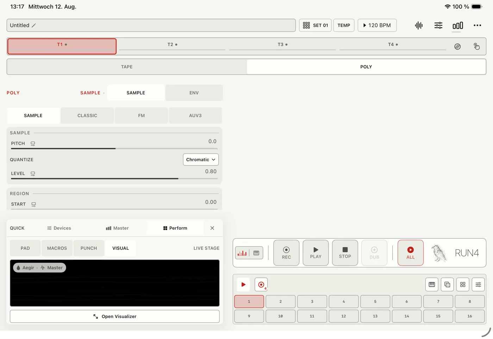
The Quick dock on iPad in landscape, with the Visual page's live preview. Open Visualizer runs the full stage inside the dock, so tapes, mixer and transport stay usable around it.
Every scene listens to the same four tapes and master output; each one just draws them differently. Skim the list once so you know what is there.
Draupnir. Tape filaments radiating from one centre, opening and bending with each track.
Elivagar. Streams of particles curving towards one vanishing point.
Njord. An oscilloscope reimagined: a thick glowing waveform trailing its own afterimages. Calm music looks calm, loud music erupts.
Jormungandr. Arcs and points circling a centre, tangling as the music builds.
Freyr. A particle field around a gravity well. Bass swells the haze at the centre, and each bar breathes the field outward.
Aegir. A slow ocean surface.
Bifrost Gate. A tunnel of cells receding into the distance, with dark wedges opening onto liquid colour and a few stars in between.
Yggdrasil. A tree whose trunk grows with the lows and whose leaves fill out with the highs.
Nidhogg. One glowing shape that keeps reforming — a double vortex, a cage, a folded sheet, a burst. A strong hit tears it sideways into slices.
Jotunheim. Mushroom colonies that sprout, grow and fade; the bass makes them spread.
Nornir Loom. A stretchy grid of lines that shears, travels and pulls through a lens in the middle.
Idavoll. Four clusters, one per tape.
Helheim. Long threads hanging across the stage, braided and pinched by the wind.
Urd. An hourglass of falling particles.
Sol. A sun: rings at the centre with rays reaching to the edges of the screen.
Ran. A folded wave mesh.
Mimir. A web of nodes and paths, with shattered plates around the nodes.
Vetrarbraut. A road of stars running to a distant point.
Fenrir. Layers of broken plates that grow, stretch at their own pace, and fall back to the centre.
Nornir. Points joining into shifting constellations.
Mjolnir. One ring of particles per frequency band, moving outward as that band gets louder.
Alfheim. Four curtains of northern light, one per track colour. Each shows its own quarter of the spectrum across the screen, the lowest curtain the bass, and a played note flashes their lower edges.
Huginn. The RUN4 raven, drawn from over a thousand fine points. Each part of the body takes one tape's colour and moves with it; loud passages loosen the bird, and it settles again as the music calms.
Galdr. Runes drawn and redrawn.
Midgard. A landscape made of sound: frequency across, time fading into the horizon, loudness as height.
Thor. Layers of cloud, one per tape, with lightning that strikes more often as the music gets louder. Each bolt takes the colour of the loudest tape.
Bifrost. The rainbow bridge, blended from the four tape colours. Each stripe follows one frequency band.
Valhalla. Flocks of birds in three layers of depth, each bird following its own part of the sound.
Skidbladnir. A longship on the swell. The sail's four panels are the four tapes, the shields follow each track's level, and the hull rocks with the wave beneath it.
Langeldr. The long fire of a hall. Four logs, one per tape, glow with their track; the mids are the flames and the highs throw sparks. The embers keep breathing in silence.
Niflheim. Frost creeping in from the edges of the glass. The highs grow the crystals, the lows melt them back, and each seed belongs to one tape.
Ginnungagap. The gap between ice and fire: ice reaches in from one side with the highs, fire from the other with the lows, and the seam moves towards whichever is winning.
Nordrljos. Northern lights over a ridge. One curtain per tape, each rippling with the sound.
Part 07
Mixing and routing
Levels, sends, the master chain, hardware outputs, and getting your music out of the app.
The bar-chart button in the top row opens the mixer: master level, master processing, the track channels and the AUv3 effect slots. On a wide screen it uses the full width, and the send buses live in BUS FX.
Each track has level, pan and a DJ filter, four small A to D send controls under the filter, and M and S under the fader. M mutes the track. S solos it and dims everything else, so a track silenced by someone else's solo looks different from one you muted.
Drag a send to feed that bus; double-tap it to close the send. Level, Pan, Filt and every send can be long-pressed for Modulation, Macro or MIDI Learn. Long-pressing M or S arms MIDI Learn for that button, so a controller pad can mute or solo a tape: press the pad you want and the amber ring disappears. Meters show each track and the master.
Send A to Send D feed four separate effect buses. BUS FX, in a track's Devices window, shows a whole bus in one place: all four track sends, the return level, the built-in effect and the AUv3 chain. It is the shared bus itself, so its Return and effects affect every track that feeds it.
The AUv3 version has no Devices window, so its Mix / Master page shows the Send Bus controls below the mixer instead; the sends are on the channel strips as usual.
Long-press a BUS FX Send or Return to add modulation, a Macro, or Rune Pad control. AUv3 effects on a bus can open Docked below the routing, Compact, or Full Screen.
The master chain runs in this order: tone (LOW, MID, HIGH), then character (DRIVE, GLUE, OTT), then stereo width (W LOW, W MID, W HIGH), then the LIMIT and its CEILING, the loudest the output can get. On wide screens the controls are laid out in that order; on iPhone they fit into two rows of five, with CEILING as a separate chip.
The preset menu offers Neutral, Gentle Glue, Open Highs, Ambient and Warm Tape. Analyze suggests a starting point without changing the sound until you agree. The red rings on GLUE, OTT and LIMIT show how much they are actually reducing.
AUv3 effects can be loaded on the selected bus or on the Master, edited if they have a screen, bypassed, or removed.
Settings › Audio › Input & Output Routing is where you set up a USB audio interface. RUN4 remembers your choices and checks them again whenever the interface is connected or disconnected, so you never end up routed into nothing.
Hardware Tape Inputs gives each of T1 to T4 its own mono input or stereo pair, so you can record four sources at once: input 1 to T1, input 2 to T2, and so on. Detect Input Channels helps when iOS doesn't show all inputs until recording starts.
Hardware Outputs sends each Tape to Master, Off, a mono output, or a stereo pair. Master Output can stay on the normal stereo pair, move to another pair, become mono, or be switched off.
A Tape sent straight to a hardware output is taken out of the Master, so you don't hear it twice. Its effect sends still return through the Master.
For example, send T1 to T4 to outputs 1 to 4 for a four-channel mixer, or to pairs 1–2, 3–4, 5–6 and 7–8 for four stereo stems.
Link Audio Inputs, on the same screen, lists the audio shared by other Link apps on your network. Turn on Link and Audio Sharing, then assign any channel to T1 to T4. Record and Record & Play then record that stream with the same Free or fixed-length options as a normal input. Monitor lets you hear the Link source live; without one, it monitors the Tape's hardware input.
Hardware Route keeps a Tape on its physical input. If a saved Link source disappears, RUN4 remembers its name and uses the hardware input until the source comes back, instead of going silent.
If a setting stops working — the interface disconnects, or multiple outputs can't start safely — RUN4 goes back to the normal stereo Master. How many channels you get depends on your interface and on iOS.
Export & Bounce is in the top ellipsis menu. It has its own screen so it never gets in the way while you play.
Export records the live output in real time. Choose Master and/or T1 to T4 as stems, then Record or Record & Play. Stop Export finishes and opens sharing for the new files.
Offline Bounce renders without playing in real time. Choose Master and/or the track stems, set the Bounce Length, then tap Bounce. With TÓLF, Bounce To also lets you render straight onto a Tape instead of to Files.
Some sounds and settings can't be bounced offline. When that happens, a note next to the track explains why, before you start.
Which one to use: live Export for performances, where your gestures and timing matter; Offline Bounce for fixed-length renders, clean stems and anything going into another app.
Part 08
Sync and control
Playing RUN4 from other gear, and other gear from RUN4.
The MIDI page is under the ellipsis menu, then Settings. Input picks All MIDI sources or one in particular, Refresh Devices looks again for devices, and Bluetooth MIDI opens the iOS connection screen.
Poly Channels gives each of T1 to T4 its own MIDI channel, so you can play all four from one controller or from four. Control Channel sets which channel carries the global controls, or All.
Program Change lets incoming program changes load Sets. Macro CC lets MIDI CCs control your learned macros.
MIDI Mappings starts with a Transport section. Press Learn next to Play All, Stop All, Record or Dub, then press the button or pad you want to use. It accepts notes and CCs, so pad controllers work too, and a pad mapped here controls the transport instead of playing a note. Record and Dub follow the selected track and do nothing on Disc. These mappings belong to your controller, not the project, so they stay when you switch projects. The section's switch turns them off without forgetting them.
Below that, Current Bank gives M1 and up their own CCs. By default a Current Bank CC controls macro N of whichever track you are on, so the same knob follows you from T1 to T4. The pin button on each slot fixes it to one bank instead — T1 to T4, or TÓLF — so the CC always reaches that one macro; choose Follows Focus to go back. Pinning is what makes a multi-track macro (see Add Target) work reliably from one fader. Expand a slot to see and edit it on every bank.
Save Current as Layout stores your controller's transport buttons and Macro CC positions for use in other projects. The macro targets stay with each project, so one controller layout can play very different projects.
MIDI Clock In and Out, Ableton Link, Sync Quantize, Rec Grid and the Metronome all live in Timing & Sync — open it here, or long-press the BPM display anywhere. MIDI Clock In makes RUN4 follow an external clock and transport; MIDI Clock Out sends RUN4's clock to other devices; Sync Quantize waits for the next beat before Record, Overdub or Play All while Link or MIDI Clock is running.
Rec Grid does the same when neither is running. Pick a value from eight bars down to a sixteenth, and a recording waits for the next grid line before it starts; Free starts right away. The first take sets the grid, so later recordings on other tracks line up with it.
The waveform-plus button in Tape's transport box opens the recording panel described under Recording a take: Record or Record & Play, Free or 1, 2, 4 or 8 bars, Count-in Off or 1 Bar, and the Metronome with its volume. A count-in shows READY 4, 3, 2, 1. Fixed recordings then show bars and time left, stop by themselves, and Record & Play loops the new take right away.
The Metronome clicks the same grid: quarter notes at the project tempo, with beat 1 accented, so you have something to play along to. In the app it is never recorded into Tape or Export. Inside the AUv3 the click plays through RUN4's output so the host can hear it, but it still stays out of RUN4's own Tape recordings.
Long-press the Metronome to choose when it clicks: Always, Rec while recording or overdubbing, Play during playback, or Rec+Play for either. The count-in always gives its four clicks, whatever you choose here.
Virtual Port (shown as RUN4) makes RUN4 appear as a MIDI destination, so other apps on your device can play it.
Module MIDI Mappings holds MIDI Learn for the mixer's Mute and Solo buttons and for TÓLF's per-track controls.
The project BPM is in the top row. Drag the BPM chip to change the tempo, tap it for fine ±0.1 steps, or long-press it to open Timing & Sync.
Ableton Link keeps tempo and start/stop in sync with other Link apps on your network, and Timing & Sync shows its status. RUN4 shares its tempo with Link, and follows Link's start and stop once you enable that in the Link settings.
With Link Audio on, RUN4 shares its master mix and the four track outputs with other Link Audio apps on your network that ask for them.
It can also receive Link Audio straight into any Tape. Choose the source in Settings › Audio › Input & Output Routing, then record it with the normal Tape controls — no extra routing app needed. Tap Monitor on that Tape to hear the source live.
RUN4 hosts AUv3 instruments in Poly and AUv3 effects in the mixer and master. They all follow RUN4's tempo, bar position, time signature and start/stop, so tempo-synced gates, filters and grooveboxes stay in time with your tapes.
Plug-in screens can open Docked, Compact or Full Screen, if the plug-in supports it. Docked keeps the plug-in inside RUN4, and rotating the device keeps your current tab.
RUN4 also runs inside other apps as an AUv3 effect, source and instrument. The plug-in has the same workspace as the app, including the full Mix / Master page, meters, sends and bus controls, a Master page in the Quick panel, and the visualizer.
The host's preset menu lists RUN4's Sets. Loading one sets all four device chains and the tape controls — speed, pitch, keylock, reverse, gain, loop fades, wow and flutter, wear and tape type — and the Tape page shows what you loaded. Your recordings, loop points and transport are never touched, and the Init Set resets all of those controls.
A few things only work in the app, because iOS doesn't allow them in a plug-in: hosting other AUv3s, file export and bounce, and the AudioShare import. In the plug-in, use Import instead — AudioShare shows up there as a file location.
With a hardware keyboard connected, Poly and TÓLF can be played like a MIDI keyboard. In either one, press M to turn QWERTY MIDI on or off; a short Keys on / Keys off message confirms it.
While QWERTY MIDI is on, the keyboard is an instrument: only the note keys, Z, X and M do anything, so a stray key can't jump you somewhere mid-performance. Press M to get the shortcuts back.
Shortcuts with Command keep working either way. Tap out of any text field before playing, or it will catch your typing. Inside a plug-in on the Mac, the plain navigation keys are left to the host app.
With QWERTY MIDI on
A W S E D F T G Y H U J K
One octave of notes from Poly's or TÓLF's base note
Z / X
Octave down / octave up
Shift + note key
Play the note harder
M
Turn QWERTY MIDI off
With QWERTY MIDI off
1 to 4
T1–T4 (inside TÓLF: its tracks 1–4)
5 / D
Disc
6 / F
Perform
7 / O
TÓLF
T / P
Tape / Poly for the selected track
[ / ]
Previous / next track; inside TÓLF, its twelve tracks
< / >
Previous / next sub-tab
R
Start or stop the Poly pattern; inside TÓLF, start or stop everything
No sound at all. Check in this order: the selected track, whether it is playing, which source it is on, whether the tape, sample or disc actually holds audio, the track level, the master level, and finally each device's Mix — one may be at 0 or at 1.
You recorded over a tape you wanted to keep. Open the ellipsis menu and choose Undo — it names the recording it will undo. The old take is also still in the Sample Browser under Recordings, so you can reload it later.
Capture is silent. Turn Listen on first and let it hear some audio before you capture. Don't capture while recording or overdubbing, and make sure the sound is actually audible in RUN4.
MIDI doesn't arrive. Use Settings › MIDI › Refresh Devices, set Input to All, and check the channel on the sending app or device. Bluetooth MIDI has its own button on the same page.
The computer keyboard doesn't play Poly. Select Poly, press M to turn on QWERTY MIDI, and tap out of any text field. While it is on, A to K play notes instead of shortcuts.
An AUv3 instrument won't load, or says it couldn't connect. RUN4 already tries once more by itself. If it still fails, refresh the AUv3 list, check that the plug-in really is an instrument, then remove and reload it.
A Docked or Compact plug-in screen is blank. Close and reopen it, or try Full Screen. Some plug-ins only support certain window sizes even though their sound works fine.
A tempo-synced plug-in doesn't follow. Check that RUN4 is actually playing and that the plug-in's own sync or host-tempo option is on — many ship with it off.
The audio drops out. Use fewer heavy plug-ins, thin out busy Grain, Bloom and Command activity, stop tracks you aren't using, or bounce complex parts and play the bounce instead.
A linked file is missing. Open Samples, look under Linked Folders, and link the folder again or re-import the file.
Offline Bounce won't include a stem. Read the note next to the track: some live or plug-in sounds have to be recorded with live Export instead.
Part 10
TÓLF
TÓLF is the twelve-track sequencer inside RUN4. This part follows the order you would build a piece in: the tracks and their sounds, writing and generating parts, arranging them, then mixing, recording and exporting.
TÓLF is a twelve-track sequencer. It is not a separate app: it uses RUN4's transport, header and mixer, and adds two screens of its own.
PLAY and STOP work on the selected TÓLF track just as they do on a tape. PLAY starts it, or adds it to whatever is already playing, so you can bring tracks in one by one. STOP stops only that track; double-tap it to stop everything. ALL starts every track together. A small play mark in the track's colour shows which tracks are playing, and only their playheads move. Playing a track never solos it — Solo is only ever the S you switch on yourself.
Tap the rune chip in the destination bar to go in. T1 to T4 are replaced by TÓLF's two chips, CREATE and PATTERN. Disc steps aside, since TÓLF doesn't use it; Perform stays, because TÓLF has a section there too. The chip you came in through now shows RUN4's raven — tap it to go back.
CREATE is where you make a part: one track at a time, with its steps, its sound and a keyboard. PATTERN is where parts become a piece: patterns, then scenes, then a song.
Each screen is one page you scroll. Pick what you want to work on and scroll to the rest.
Everything else happens on RUN4 screens you already know: mixing on Mix/Master, recording through the Tape REC long-press, exporting in Export & Bounce, and MIDI in Settings. Those come last in this part.
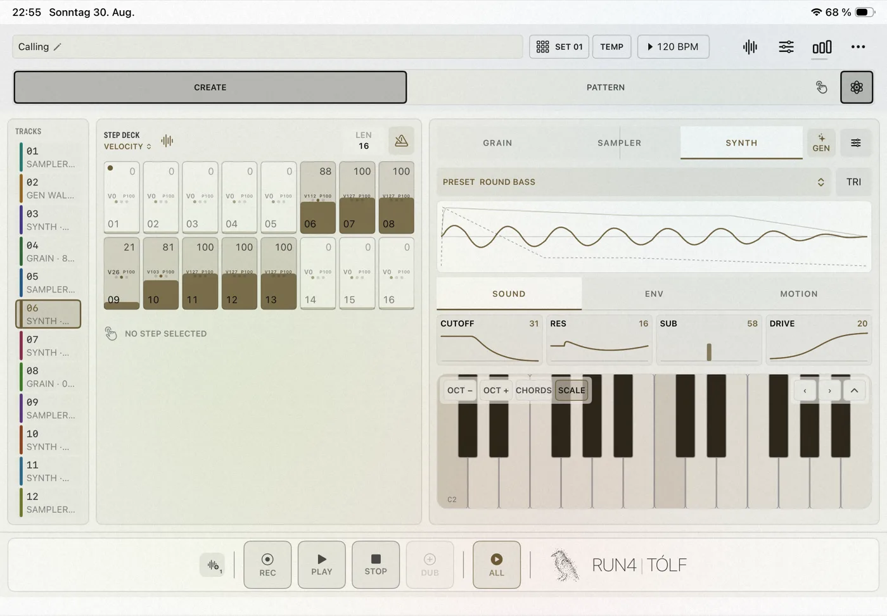
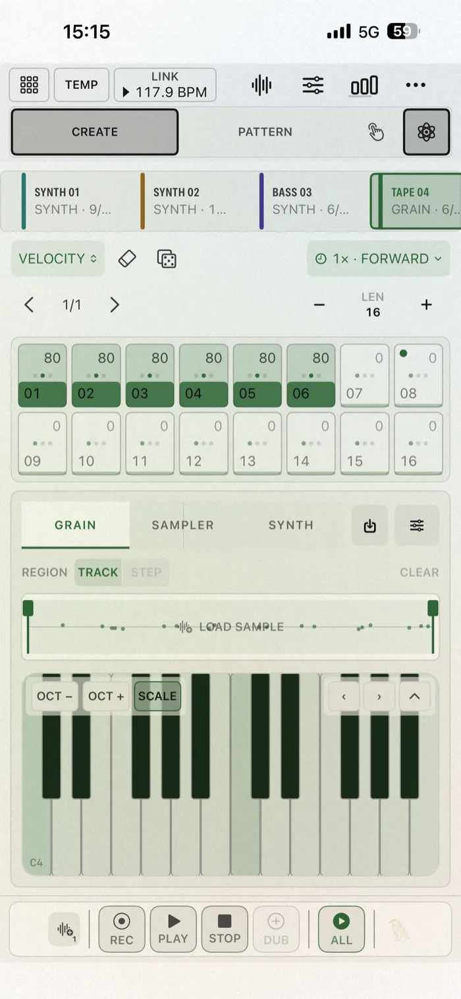
CREATE on iPhone and iPad: the step deck, the keyboard and the selected track's sound. On iPad the track rail and the sound editor sit beside the deck.
TÓLF has twelve tracks. Each one is a Synth, a Sampler or a Grain track, and you can switch at any time.
Synth is TÓLF's own instrument, subtractive and FM in one. Sampler plays samples, across pads and layers. Grain turns a sample into a cloud of tiny overlapping grains — a texture instead of a hit.
The Synth comes with thirty-one factory patches: basses, plucks and leads, keys and stabs, pads, electric pianos and bells, tuned drums and mallets, and short digital accents. Its FM side has its own decay, so a struck sound can lose its bite while the note still rings. Key Track in the Filter card lets the cutoff follow the note, so higher notes stay bright.
The track rail runs along CREATE. Each tile shows a track's name and colour, with small marks when it is muted or soloed, so you can read the whole set without opening the mixer. Long-press a tile for Mute and Solo, Rename and Colour, Move Left and Move Right, and Duplicate Track.
Choosing a track swaps everything below the rail — its steps, its sound editor, its keyboard. You always work on one track at a time.
The step deck shows sixteen steps at a time. A track's length, LEN, can be longer, and every track can have its own. Twelve tracks at twelve different lengths is not a special mode — it's just what happens when you set them that way.
On the Velocity lane, tap an empty step to add a hit, and tap the selected hit again to remove it. On every other lane a tap only selects the step, so you can prepare a step before it sounds. Drag across steps to paint values. Where there is room — on iPad and in landscape — a panel shows the tapped step's VEL, PROB, NUDGE, GATE, LENGTH, SAMPLE, MIDI NOTES and CONDITION. Long-press a step for more: Sample Browser, P-LOCKS, COMPONENTS, TIMING, AUTOMATION and CLEAR STEP.
Below the deck sits a two-octave keyboard, so you can play the sound, try a patch, or record notes straight in. On a Sampler track the same space can show the pads instead; the Show pads / Show keyboard button switches between them. OCT, CHORDS, SCALE and the other keyboard chips sit on the keys at the top left.
The dice next to a lane randomises only that lane, within a gentle range, so you can shake up a part's velocities without losing the part. On an empty Velocity lane it fills every step instead.
The lane menu also holds the parameter locks for the track's sound: Cutoff, Resonance, Sub, Drive and more on a Synth; Cutoff, Resonance, Tune, Level and Decay on a Sampler; Size, Density, Spread, Pitch and Contour on Grain. Paint a lock lane to give single steps their own value; a step without a lock plays the track's setting.
A Synth track can also record automation. A parameter lock belongs to one step and only sounds when that step plays; an automation lane runs across the whole pattern, silent steps included. Arm it with the red A button in the transport row and move any Synth control while the pattern plays. The curve draws itself over the step grid as you go, and the deck follows the control you are moving. Long-press A to choose Record on All Steps or Record on Trigs Only — the second writes only onto steps that play, so the silent steps in between keep their values — or Delete Automation Only, which clears the automation and leaves every step and lock alone.
You don't have to write every part by hand. Seven generators can make the notes for you. They live on the GENERATOR card in CREATE, and they work on Synth tracks. To start one, tap GEN above the step grid.
EUCLID spreads a number of hits as evenly as possible across a number of steps — the rhythm behind a lot of drum music. WALK moves from note to note without a plan. CASCADE falls through a phrase and starts again from the top. BLOOM drifts in slow clouds, with several speeds of change layered together. ORBIT replays your own steps with up to four playheads, TIDE builds your steps up and lets them fall away, and COLLIDER bounces your notes around a spinning drum — each has its own section right after this one.
KIND picks the generator, and CLOCK sets its speed. The other controls change with the generator: PULSES and ROTATE for EUCLID, STEPS for EUCLID and CASCADE, DENSITY and RANGE for WALK, CASCADE and BLOOM, head chips for ORBIT, SHAPE, CYCLE and LIFT for TIDE, and SPIN, SPEED, LIT and DENSITY for COLLIDER. The card's preview shows the pattern running before you commit to anything. STEPS in the card's top corner switches the generator off and brings your step grid back.
Every generator works out its notes from the track's seed and its position in the bar, and nothing else. The same bar always plays the same notes, and an export plays exactly what you heard — no need to turn it into steps first.
The circular-arrows button (REROLL) draws a new seed. Nothing else changes: same generator, same settings, new notes.
WALK starts out FREE: every note is picked on its own, so the line jumps around. LINE draws a connected melody instead — short steps, gently pulled back towards the root, starting again at the root every sixteen steps — so it sings a phrase rather than wandering off. Turn LINE up for a tighter, more singable line.
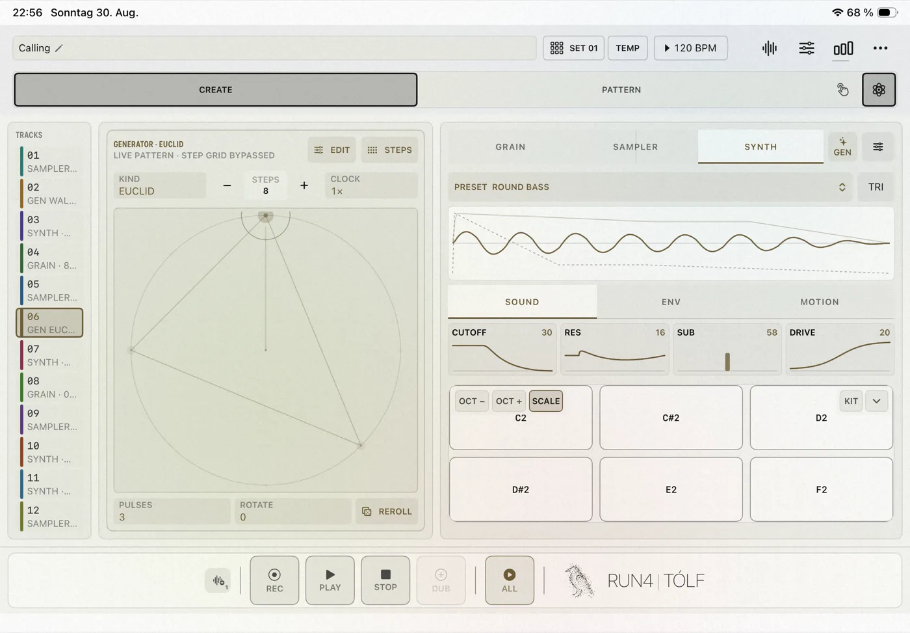
EUCLID on the GENERATOR card. The preview shows the rhythm before anything is written.
ORBIT doesn't invent notes. It plays the notes already in your track's steps, read by up to four heads. Each head moves through the phrase at its own speed and direction, so one short phrase turns into a web of related lines.
The notes come from your steps, so to change them, change the steps. On the ORBIT card, tap NOTES: ORBIT pauses and your step grid comes back. Edit the notes, then tap GEN above the grid. ORBIT comes back with every head as you left it.
The key comes from the track too. ORBIT's notes go through the track's ROOT and SCALE like any Synth note, so changing the scale changes what ORBIT plays. On each head, INTERVAL, MIRROR and OCTAVE are the controls that change pitch.
When you switch to ORBIT, only head 1 is on, reading the phrase straight through — so at first you hear exactly what you had. Heads 2, 3 and 4 wait switched off, each set up as a different counter-line.
The four heads are the chips H1 to H4 on the ORBIT card. Tap a head that is off to switch it on. Tap a head that is on to open its settings — RATE, DIRECTION, INTERVAL, OCTAVE, TURN, MIRROR, CHANCE, OFFSET and DRIFT — where you can also switch it off. A head with an interval shows it next to its rate, for example ½× +4.
RATE is how fast the head moves, compared with the track's clock: ¼× and ½× play every fourth or second step, 1× plays every step, and 2× and 4× skip through the phrase faster. DIRECTION is FWD, BACK, PEND (back and forth) or RAND. OCTAVE shifts the head up to two octaves either way. CHANCE is how often it actually plays. OFFSET starts it further along the phrase.
Three controls turn the heads into a real fugue. INTERVAL moves a head's notes up or down in steps of the track's scale — in major or minor, +2 is a third and +4 a fifth, the classic answer to a melody. MIRROR plays the phrase upside down around its first note: where your melody climbs, the head falls. DRIFT slowly pulls a head out of step: every 1, 2, 4 or 8 passes it moves one step further ahead, drifts apart from the others and eventually lines up again, like Steve Reich's phasing pieces.
TURN decides which passes of the phrase a head plays. ALL plays every pass. CALL plays only the first, third, fifth… pass, and ANSWER only the ones in between — so a CALL head and an ANSWER head take turns, like question and answer.
A good first fugue: switch on head 2 with RATE ½× and INTERVAL +4, and leave head 1 as it is. For call and response, set head 1 to CALL and head 2 to ANSWER with MIRROR on. For slow, hypnotic change, switch on head 2 at 1× with DRIFT every 2.
When several heads land on the same note, it plays once. A step can hold up to eight notes at a time. Each note keeps the loudness and length of the step it came from.
The preview shows one lane per head: the faint dots are your phrase, and each head lights up where it plays. It says PLAY A PHRASE FIRST when the track has no notes yet, and ALL HEADS OFF when every head is switched off.
TAKE PHRASE works here too: it writes the bars you are hearing into the steps as a new phrase, and ORBIT switches off.
TIDE plays your track's steps in order, like the track itself, but under a slow curve. At the bottom of the curve only about one note in ten plays, softly and at the written pitch. Towards the top more and more notes come in, louder, until every note plays. It is a build-up without drawing any automation.
SHAPE is the curve. RISE builds up and starts again from the bottom. SWELL builds up and falls away again. FALL starts full and thins out.
CYCLE is how long one tide takes: 4, 8 or 16 passes of the phrase. LIFT raises the notes by up to two octaves as the curve reaches the top, so a build also climbs; OFF keeps them at their written pitch.
Like ORBIT, TIDE plays the notes in your steps, through the track's ROOT and SCALE. Tap NOTES to change them and GEN to return. The preview draws the whole curve, fills in the part already played, and lights up each note as it plays.
TAKE PHRASE captures the pass you are hearing — handy for keeping one sparse or one full version of your phrase.
COLLIDER is a drum full of balls, in the spirit of the OP-1's Tombola. Every step with notes — up to eight — becomes one ball bouncing inside a round drum. The drum has six segments, some lit and some dark. When a ball hits a lit segment, it plays its step: the same notes, chord and length you wrote. A hit on a dark segment stays silent.
SPIN turns the drum, either way, or holds it STILL. The balls keep their own rhythm while the drum turns under them, so which hits land on light slowly changes and the pattern keeps evolving. With the drum still, the pattern settles into a fixed rhythm.
SPEED sets how fast the balls bounce: low for a sparse, breathing pattern, high for a busy rattle. Each ball has its own pace, and faster balls play a little louder. DENSITY lets only some of the hits through.
LIT sets how many of the six segments play, from 1 to 6, spread evenly round the drum. Three is the classic half-and-half drum; with all six lit every bounce plays, with one lit only a few land.
A ball belongs to its step. Add or remove a note and every other ball keeps its course. When two balls play at the same moment, the earlier step wins. REROLL throws every ball in anew.
Nothing is simulated: like every generator, COLLIDER works its notes out from the seed and the position in the bar, so the same bar always plays the same notes and an export plays exactly what you heard. There is no real gravity; the slight sag of the balls in the preview is only for the eye.
Like ORBIT and TIDE, COLLIDER plays through the track's ROOT and SCALE. Tap NOTES to change the steps and GEN to return; with no notes on the steps it stays silent. The preview shows the turning drum — lit segments bold, dark ones dotted — every ball in flight, a spark where a ball has just played, and a small grey ring where a bounce stayed silent: on a dark segment, skipped by DENSITY, or beaten to the same moment by an earlier step.
TAKE PHRASE writes the bar you are hearing into the steps, so a lucky pattern can be kept and edited.
Generators are great at finding ideas, but you can't change a single note in them. TAKE PHRASE bridges the two.
Press it — the down-arrow button on the GENERATOR card — while a generator is running, and the cycle you are hearing is written into the track's own steps, and the generator switches off. The sound doesn't change: the same notes keep playing, but now they are ordinary steps you can edit one by one.
Steps the generator skipped become silent steps, so the pattern keeps its length and every rest is still a place for a note. Each rest remembers the last note before it, so switching one on gives you a note in key.
GENERATOR is one of five pages on that card in CREATE. The card appears while a generator is on — tap GEN above the step grid. Swipe across the card to move through the pages: GENERATOR, ARP, STRUM, HOLD and HARMONY BRAIN. They loop around, so you can keep swiping one way.
ARP plays the notes of a chord one after another — held on the keyboard or written on a step. MODE sets the order, RATE how many notes fit into one step, and RANGE how many octaves it climbs.
FIGURE gives the arpeggio a rhythm. Eight positions sit under the controls, and each one taps through four states: rest, short note, normal note and accent. The arpeggio reads them in turn and starts again after the eighth, so a rate of four uses the first four and a rate of eight uses them all.
A rest skips a note without pausing the pattern: the next note is the one that would have come anyway.
Once FIGURE is on, GATE and ACC come alive. GATE is how long the notes are compared with the gap between them — short for clipped and rhythmic, long for smooth. ACC sets how much quieter the normal notes are, so the accents stand out without making the part louder.
STRUM spreads a chord out instead of hitting every note at once. VOICE and INVERT build the chord, and the STRUM fader sets how long the spread takes, from a slight looseness to a slow roll.
STROKE sets which end is struck first. UP starts at the bottom, DOWN at the top, and ALT switches every bar so a repeated chord doesn't sound mechanical.
SHAPE sets the spacing within the strum. EVEN spaces the notes equally. SPEED starts slow and speeds up. SLOW starts fast and opens out.
ACCENT lets the later notes fall back behind the first, like a picked chord, so the strum has an attack instead of a block of equal notes.
HOLD latches a chord so it keeps sounding after you let go, which makes the other pages playable with one hand. HARMONY BRAIN keeps what you play in a key and can move a whole part to another chord without rewriting it.
A Sampler track can show a pad grid in CREATE, in place of the keyboard — switch with the Show pads / Show keyboard button. It shows six pads for the selected track. TRACKS switches the grid to all twelve TÓLF tracks, by name and colour, so you can play kick, snare and the rest across tracks without switching between them.
The pad grid has a row of controls above it, so nothing covers what you play. When a track's pads use more than one bank of six, a bank number appears at the left of that row. Tap it for the next bank (it loops around), or swipe it sideways. Swiping on the pads themselves would trigger them, so the swipe lives on the bank number.
GATE decides whether a pad is a one-shot or sustains. With GATE off, a pad plays and ends by itself. With GATE on, it sounds as long as you hold it, and letting go of one pad only stops that pad.
With GATE on, holding a pad plays it, so a pad's settings card moves to EDIT: tap EDIT, then the pad. With GATE off, long-press the pad instead.
The pads always play their own slot, so there is no SLICES switch on the pad grid — SLICES only changes what the keyboard does.
Tap an empty pad to load a sample. Tap a loaded pad and the waveform editor above the grid jumps to that pad. Long-press a loaded pad (or use EDIT) to reload or delete its sample.
A whole pad bank can be saved as a Kit and loaded later, so drum hits and melodic one-shots can be swapped under the same pattern. KIT on the control row saves, loads and deletes Kits. Kits are shared between the app and the plug-in.
Long-pressing a loaded pad, or the waveform on the SOURCE page, also offers Normalize and Make Mono — the same two edits described under Tape: a shared gain to -1 dBFS, a choice of Left, Mix L + R or Right, nothing written if the sound already fits, and always a new sample instead of overwriting. They work on Sampler and Grain tracks and can be undone.
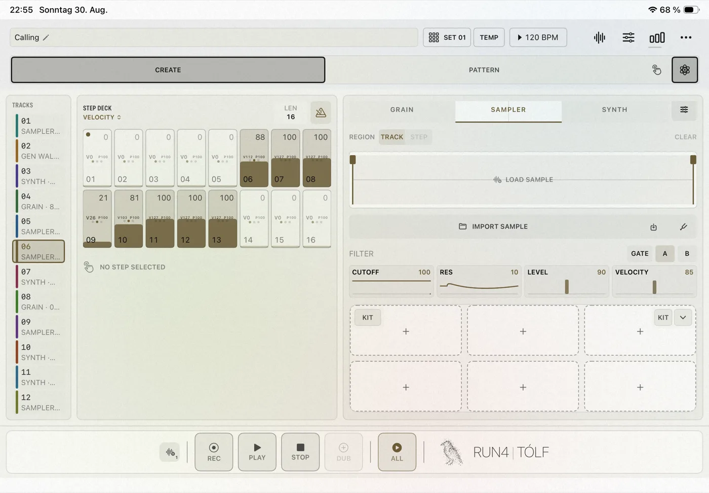
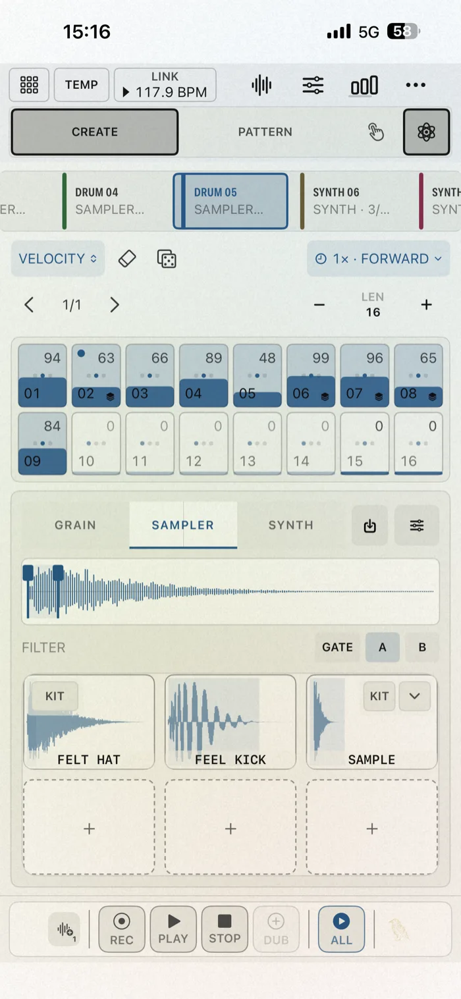
A Sampler track on iPhone and iPad. The waveform editor above the deck follows the selected pad or region.
The CHOP page, next to SOURCE on a Sampler or Grain track, cuts a sample into slices and turns them into a playable bank. The Sample Browser and the Multisampler open the same editor. A track holds up to 64 slots, and the count next to TARGET TRACK shows how many you will end up with.
There are four ways to place the slice markers, all editing the same set. AUTO makes a first guess. EQUAL cuts the sample into equal parts, set with the Slices fader or the minus and plus buttons. TRANSIENT finds the hits, with a sensitivity control and a maximum number of slices. MANUAL adds nothing by itself; it lets you edit what the others made. You can drag markers in every mode, drag one off the waveform to remove it, and in MANUAL tap the waveform to add one.
Tap a slice to open SHAPE for that slice. Attack, Sustain and Release shape its volume, Pitch transposes it up to two octaves either way, and PLAY lets you hear exactly what you'll get. Step Gate Mode is set per slice too — a kick and a snare usually want One Shot, while a pad tail wants Gate. Each slice starts on Default, which follows the setting on the CHOP page, and the caption tells you what that is. Keep leaves the step's own gate as it was.
Below the waveform, Bank decides what happens to the slots already on the track. Replace clears them and installs only the new slices. Keep Orig keeps the original sample in slot 1 and adds the slices after it. Choke Group is Off or one of eight groups, so, for example, open and closed hi-hats can cut each other off.
Play Through lets each slice ring on past the next marker, all the way to the end of the sample. The markers still show where the slices start. Because this makes slices longer, there is a limit — 120 seconds for the whole chop and 60 seconds for one slice — and CHOP turns orange and is disabled when you go over.
Auto-Assign To Steps places the slices on the track's steps in order, starting over if there are more steps than slices. Above eight slots, a track can no longer pick slots by velocity, so steps have to name their slot directly; Auto-Assign then switches on by itself and the slot count turns orange.
On a Grain track you choose where the result goes. Grain Source uses the one selected slice as that track's grain source. Sampler Bank sends all the slices to a Sampler track instead.
KEYS & PADS decides how you reach the new bank. CHROMATIC makes it available to the steps and pads. SLICES also spreads it across the keyboard: START KEY sets the first key, and START BANK puts it on a particular bank of six. This is the only place to set the start key, so place it before you commit. The next section explains the keys.
CHOP commits. Nothing changes on the track until you press it, and leaving the page with unsaved edits asks first.
You can play a chopped bank from the keyboard as well as the pads. On a Sampler track with slots, SLICES sits among the chips at the top left of the keyboard. Off, the keys play the track chromatically. On, each key plays one slice instead of a pitch, counting up from the start key, and the keys show the slice numbers.
A key picks a slice but doesn't transpose it. Every slice plays at its own pitch whichever key you use, so a key and its pad sound and record exactly the same. A slice's own Pitch, set in the Chopper, still applies.
Keys outside the bank stay silent — no wrapping around and no fallback sound. An empty pad position also keeps its key and stays silent, so the numbers on the keys always match the pads.
Slice keys are handled before Chord, Hold, Arp and transpose, so nothing else can change which slice a key plays. Those features still work normally on chromatic tracks.
GATE works on the keys like on the pads: with SLICES on, GATE appears next to it, and holding a key sustains its slice. Letting go of one key only stops that slice.
External MIDI plays the same bank the same way. The on-screen key, an external key and the pad are separate voices, even on the same slice, so letting go of one never stops another.
Recording a slice into a step saves both the slot and the note it was played with, so the step plays back exactly what you heard.
A Sampler track can hold far more than the six pads on CREATE. The Multisampler lays out a bank of up to 64 slots and decides which slot a step plays.
With up to eight slots, each slot has a velocity range set by LOW and HIGH. A step without a fixed slot plays the slot whose range matches its velocity, so one pad can hold a soft, medium and hard hit of the same drum. Where ranges overlap, the narrowest one wins; if none matches, the track's active slot plays.
Past eight slots, velocity zones switch off: every slot covers the full range, and a step has to name its slot to reach it. The editor tells you when this happens. It is the same limit the Chopper warns about.
A step with a fixed slot always plays that slot, whatever the zones say.
Each slot also has its own Choke Group, Off or one of eight, so slots in the same group cut each other off. Voices: Mono, in the Sampler card next to Region, does this for the whole track: each trigger cuts the sound before it. While it is on, the individual choke groups are paused, and turning it off brings them back.
Master Devices is TÓLF's project-wide processing, opened from the Devices sheet. It has four shared effect buses — AIR, TONE, COLOR and GRAIN — plus the MOD page with the four modulators. Tracks and groups feed each bus through their sends of the same name, so a track with its send at zero isn't affected. Each bus returns before the master stage.
AIR is a delay into a reverb. The delay has a Time from a sixteenth to three quarters, Feedback, a Tone control, a little Saturation, and a Pitch shift (chromatic or free). The reverb has its own Mix, Size, Damping and Tone, a Room, Hall, Plate or Space character, and a Freeze that holds the tail. Freeze is for performing and isn't saved with the project.
COLOR is drive and damage: Saturate, Fold, Lo-Fi or Ring Mod, each with its full set of controls — amount and tone, bit depth and rate, crossover, focus and tilt, compression, a gate, and a noise layer with its own colour and decay.
TONE is a filter: Low Pass, High Pass, Band Pass, or a Resonator. The first three use Cutoff and Resonance. The Resonator uses Root, Structure, Detune and Voices for its tuning, and Resonance, Decay, Brightness and Noise for its sound.
GRAIN is the same granular engine the tracks use, on a bus. Cloud, Rhythmic and Reverse are starting points that set the real controls, so you can adjust everything afterwards: grain size and rate, pitch and detune, contour, warp, spray, pattern, scan and stretch, the three randomisers, and how much of the previous cloud carries on.
Each bus has a Return Level. A TÓLF track can also send to RUN4's four shared Bus FX; the BUS entry in the Devices sheet opens that same editor.
TÓLF has four modulators, M1 to M4, shared by the whole project. Each one is an LFO with a WAVE, a RUN mode, a RATE, a PHASE offset and a DEPTH. FREE keeps it running; RETRIG restarts it every time the transport starts.
Two waves make movement without a pattern. RANDOM jumps to a new value eight times per cycle; DRIFT glides smoothly from one to the next, for slow changes that never quite repeat. For these two, RATE shows how long one move takes rather than a whole cycle — down to about ten minutes for a single DRIFT move. Slow rates read as a time, like 75 s or 8.3 min, instead of hertz.
DEPTH starts at zero, so a new modulator does nothing until you turn it up. The dot under each M1 to M4 tab shows which ones are active. CLEAR empties one slot and leaves the others alone. You'll find them on the MOD page of Master Devices.
You connect modulation from the parameter itself. Every continuous fader on a track's sound has a small routing icon next to its name. Tap it, or long-press the fader, to see all four modulators. Assign one and set its amount from minus one to plus one, so one modulator can push one parameter up and pull another down. The modulator's DEPTH then fades all its connections together.
Long-pressing a fader never changes its value.
A modulated parameter shows an M1 to M4 chip next to its name, one for each modulator moving it. Tap the chip to jump to that modulator.
Each track type has its own set of destinations — eighteen on a Synth, fifteen on a Sampler and seventeen on a Grain track: both envelopes on the Synth and Sampler, the FM decay, every LFO amount, and the whole grain engine. Two kinds are left out on purpose: a sample's start, end and loop start (moving them while a note plays causes clicks), and switches like wave shape, loop mode and reverse.
PATTERN builds the structure in three layers: Patterns, then Scenes, then Song.
A Pattern is the twelve-track grid, with each track's own length, clock division and playback mode. The PATTERN screen shows every track's steps at once, with one playhead across all twelve rows. You can edit steps here with the same taps and drags as in CREATE.
A Scene turns a pattern into something you can launch. Song is a list of scene cues, lined up to the bar. Editing a cue stops a running song first, so nothing gets rearranged under the playhead.
The sliders menu holds pattern tools, including EUCLIDEAN…, which writes a Euclidean rhythm onto the selected track after a preview, and trigger conditions per step.
The pattern list shows how many steps and parameter locks each pattern has, so you can spot a busy one before opening it.
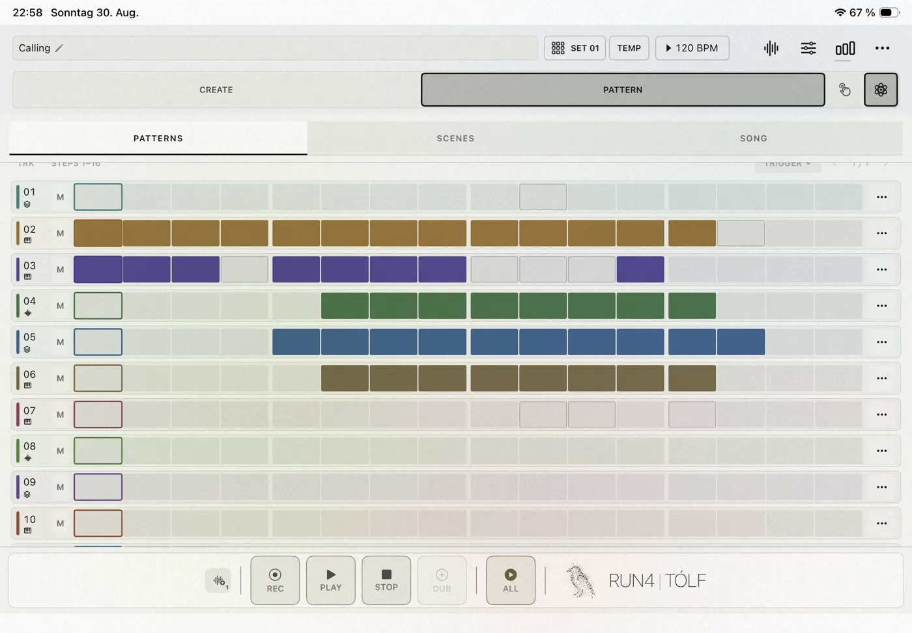
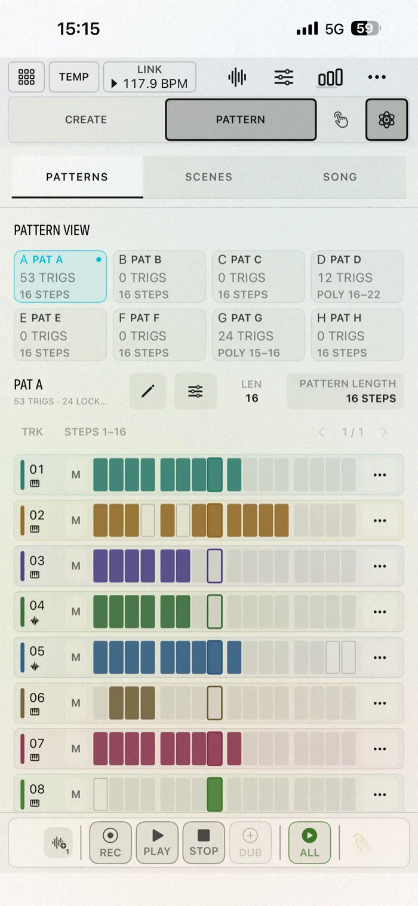
The PATTERN view on iPhone and iPad: all twelve tracks at once, with one playhead across every row.
TÓLF's twelve channels sit on RUN4's own Mix/Master screen, below RUN4's four, with the same channel strip and meter.
Every strip has M and S under the fader. M mutes that channel. S solos it and dims everything else, so a channel silenced by another solo looks different from one you muted. On RUN4's four channels you can long-press M or S for MIDI Learn; TÓLF's twelve don't have that yet.
A mix group gathers any of the twelve tracks under one GROUP TRIM and MUTE, plus four sends: Air, Color, Tone and Grain. A track can be in one group at most. Tap its number in the group's grid to add it, tap again to send it back to master. The group trim adds to each track's own level; it never replaces it.
Each TÓLF channel can also send to RUN4's four shared Bus FX, the same ones RUN4's tracks use. The BUS entry in TÓLF's Devices sheet opens that editor.
Give your groups good names — the Tape REC menu offers them as recording sources later.
Master Devices holds TÓLF's project-wide effects — GRAIN, TONE, COLOR and AIR, named like RUN4's devices — plus the MOD page with the four modulators.
All of this works in the AUv3 plug-in too, except MIDI Learn, because in a plug-in the host handles controller mapping.
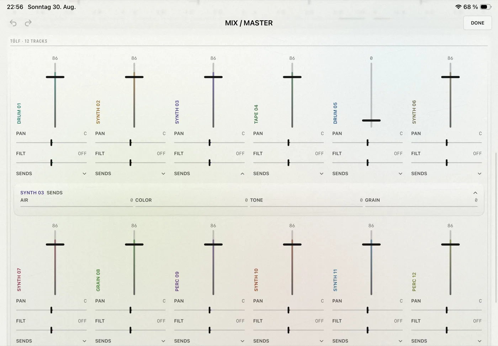
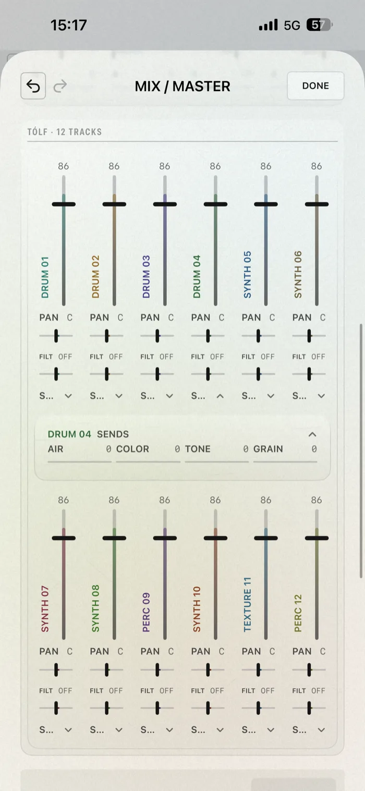
TÓLF's channels on Mix/Master, on iPhone and iPad: the same channel strip RUN4's tracks use.
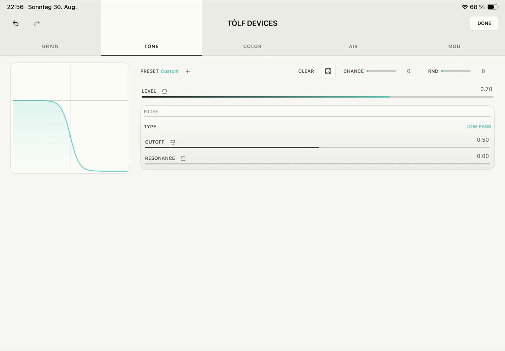
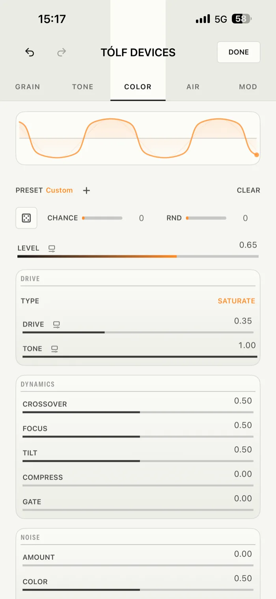
TÓLF's Master Devices, here showing Color and Tone: effects for the whole project rather than one track.
Long-press REC on any Tape track to open its menu. While TÓLF is active, a TÓLF section appears there next to Tape's recording options.
Choose Input for the normal microphone or line input, TÓLF · All Tracks for TÓLF's whole mix, TÓLF · Track for one track, or TÓLF · Groups for a mix group. Muted tracks and empty groups are shown but can't be picked, so you never record silence by accident.
Only one Tape track can record from TÓLF at a time; arming another disarms the first. The armed track shows a short tag in TÓLF's colour — T·ALL, T·3, T·A+B — instead of the usual red, so you can see it is recording TÓLF.
Pressing REC then works like any Tape recording: the same free or fixed length, count-in and metronome.
If TÓLF is already playing, recording waits for the next bar and REC shows QUEUED. If TÓLF is stopped, REC starts it from the top so the take begins on the first beat. If TÓLF stops while a recording is still waiting, the recording is cancelled cleanly.
You can't record live and bounce offline at the same time; RUN4 stops the second one from starting.
TÓLF uses RUN4's Export & Bounce screen, in the ellipsis menu. TÓLF's twelve tracks appear there as stems next to RUN4's four, so one export covers the whole project.
MIDI export writes a Standard MIDI File. Ableton export writes a complete Live Set as a zip, with the stems inside, ready to drag into Live.
Both use the same engine you play with, so a generated part — EUCLID, WALK, CASCADE, BLOOM, ORBIT, TIDE or COLLIDER — comes out exactly as you heard it.
Bouncing TÓLF onto a Tape replaces what is on that tape; it doesn't overdub. The length is rounded to whole bars and suggested from the lengths of the tracks you picked, so the bounce loops cleanly.
A bounce runs on its own copy of the engine, so it never disturbs what you are playing.
TÓLF's MIDI settings are in Settings › MIDI, under their own TÓLF heading. They are separate from RUN4's Poly and control settings, because TÓLF's twelve tracks are their own instrument.
Input picks one source or all of them. MPE Lower Zone accepts MPE with a bend range you choose. Program Change In lets program changes control TÓLF.
Input Mode decides what incoming notes do. Play Only just plays them. Live / Spray Rec records them into the running pattern, with adjustable quantise. Step Rec writes them onto steps at a position you move yourself, with the arrows or a reset to the start.
Clock In follows an external clock. Output turns on TÓLF's MIDI output, to its own virtual port or a destination you choose, with its own output mode and an option to send TÓLF's tempo.
CC Mapping learns controls — send a CC or move a control to connect them — lists and clears them, and saves a whole set as a preset.
Each track's MIDI ROUTING card, on the SETTINGS tab of its sound editor, has a channel override, a delay to line up a slow external synth, and a Local Control switch. With Local Control off, the track still sends MIDI and automation but its own sound goes quiet — turning it into a sequencer for an external instrument.
TÓLF's macros are part of RUN4's Current Bank MIDI mapping, so a controller set up there follows TÓLF too, and can be pinned to TÓLF so it always reaches a TÓLF macro.